Briefs of the AI Engineer conference talks: verbatim timestamped quotes, a claims ontology underneath, the real slides (cropped to the slide, click to enlarge) beside the takeaways, and a system diagram for every talk. Blueprint-tier talks, the ones that lay out a whole operating model, get an architecture table and a replicate-first read. Grouped by theme so the talks can be compared, not just summarized.
Anthropic says it outright: harnesses are now the limiting factor on what models can achieve. The OpenAI talk never makes that claim — it just spends its whole slot on harness mechanics and barely a word on model quality. Where they genuinely differ is the ecosystem bet.
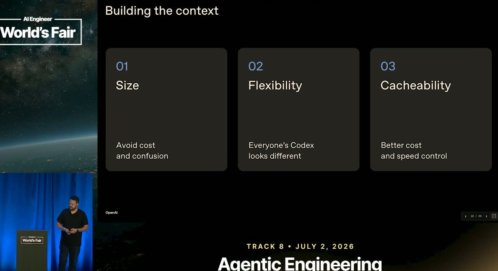
Why you should care: a rare public walkthrough of a production agent harness — deferred tools, a 2% skills cap, auto-review instead of approval fatigue, and OpenAI’s pattern of pushing harness features down into the open Responses API. If you build or buy agent tooling, this is reference architecture.
Read the brief →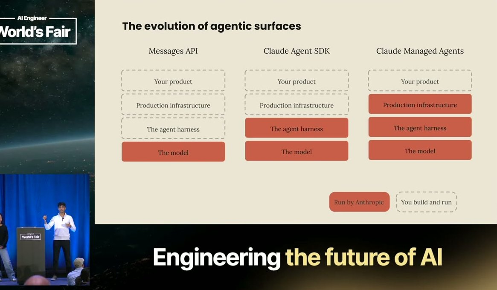
Why you should care: a concrete, dated case that your harness is a depreciating asset — the Sonnet 4.5 context-anxiety fix that became dead weight on Opus 4.5 — and the managed-agents answer: brain/hands decoupling, durable session logs, dreaming, and grader-agent outcomes. If you're deciding managed vs self-hosted, start here.
Read the brief →Every statement below is backed by independent claims from separate talks (linked ids resolve in each brief’s claims table). Convergences require multiple companies arriving at the same answer; a “divergence” must be a real disagreement, not a different topic.
Most talks argue one point. These describe an entire system or organization end to end: named components, how they connect, the numbers they run at, and the process around them. Each gets a component diagram (ours, drawn from the slides and the transcript), a component table with the slide that shows it, and a replication note.
Why it is a blueprint: Factory missions runs multi-day coding tasks through an orchestrator, workers, and validators with a validation contract written before code and serial-execution guarantees.
Read the brief →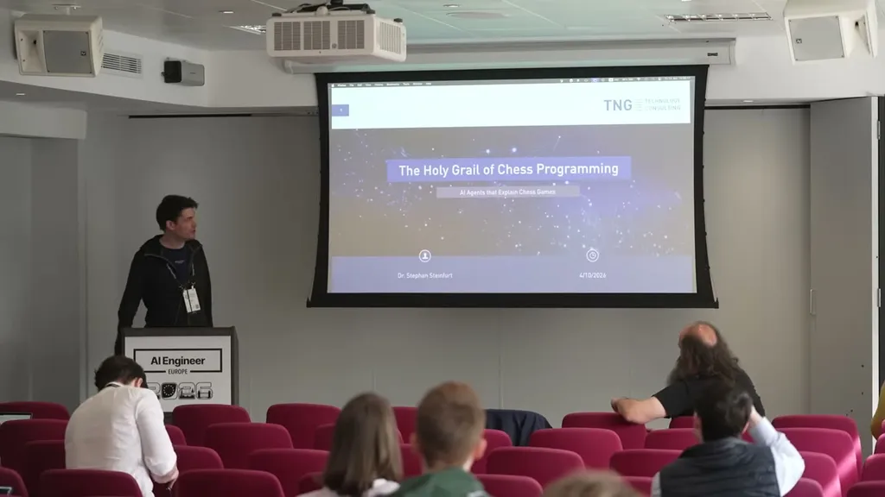
Why it is a blueprint: TNG runs a nightly Lichess-to-YouTube pipeline combining a chess engine, an LLM narrator with legal-moves and web-search tools, reasoning-model position analysis, at 20-30 cents per video with a tracked error rate.
Read the brief →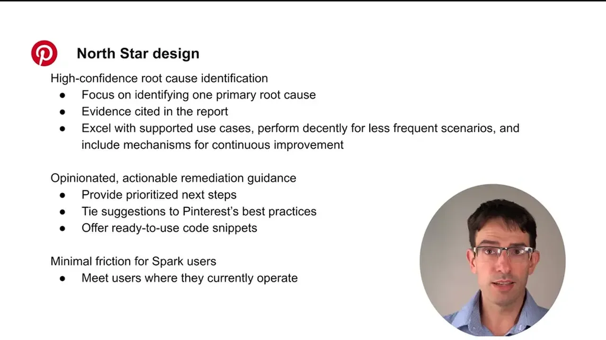
Why it is a blueprint: Pinterest Medic evolved from a single React agent to a LangGraph deep-agent supervisor/researcher/healer setup with an offline record/playback harness and collage-based bounded-signal representation.
Read the brief →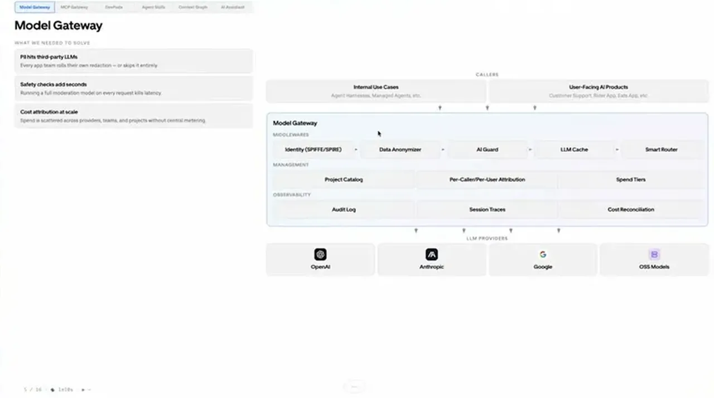
Why it is a blueprint: The talk lays out Uber's whole agentic SDLC platform end to end: six named building blocks (model gateway, MCP gateway, DevPods, skills marketplace, context graph, Cortana assistant), the numbers each runs at, how they wire into the Minion coding agent, and the inner-loop / outer-loop process an agent-authored PR follows before a human sees it.
Read the brief →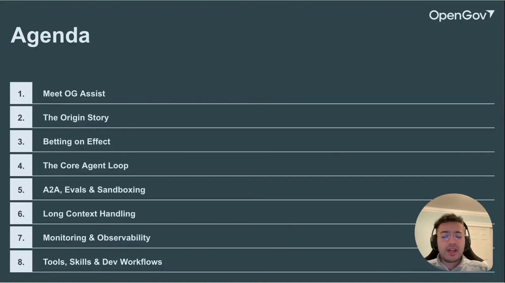
Why it is a blueprint: OpenGov OG Assist runs on a custom Effect agent loop, A2A protocol routing, human-in-the-loop tool approval, sandboxed execution, and rolling summarization for long context.
Read the brief →Why it is a blueprint: Fujitsu ships a four-stage voice pipeline (channel-separated capture with PII masking, STT at a 90% accuracy floor, orchestrated GenAI summarization, CRM sync with human verification) that cut after-call work from 6.3 to 3.1 minutes.
Read the brief →Why it is a blueprint: No. 10 Downing Street built an insurgency-model data team: outsider-only hiring, embedded forward-deployed engineers, AISI Inspect agent-autonomy evals, and sycophancy red-teaming before rollout.
Read the brief →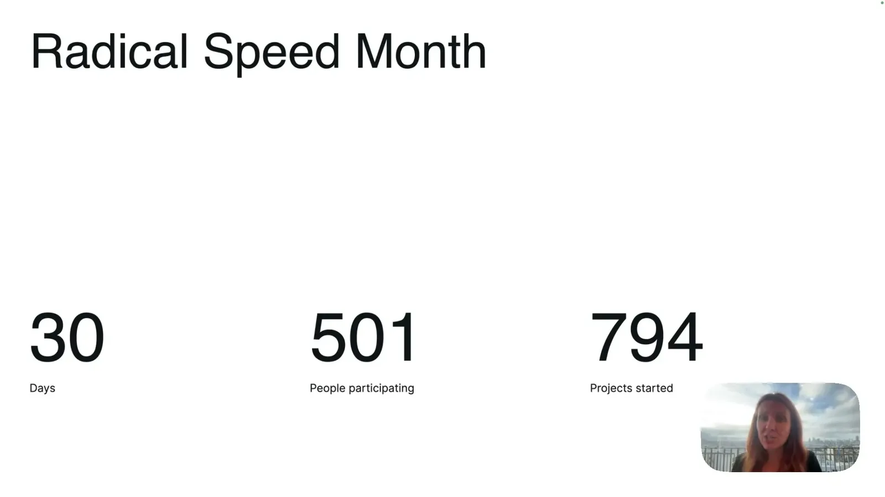
Why it is a blueprint: Automattic ran Radical Speed Month with about 500 employees and 794 projects in 30 days, backed by a two-week AI enablement course and an internal Context AC MCP knowledge server.
Read the brief →Why it is a blueprint: PFF restructured its engineering org around agents: a two-person pod deploying 5x per day with a 10x complexity-weighted output metric, dropping Scrum, and reassigning code-review nits to agents.
Read the brief →Why it is a blueprint: Amplifon Amplify combines an AI gateway with Entra auth and per-use-case budgets, a private MCP registry on top of the public one, an A2A registry auto-published via CI/CD, and a lineage view over the whole graph.
Read the brief →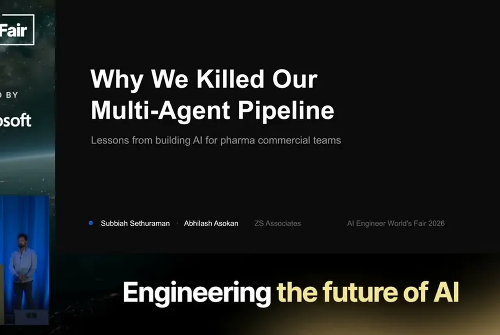
Why it is a blueprint: ZS Associates rebuilt an analytics pipeline: deterministic statistical signal detection, a consolidated reasoning agent delegating investigation, and a knowledge graph acting as a control plane over hypotheses.
Read the brief →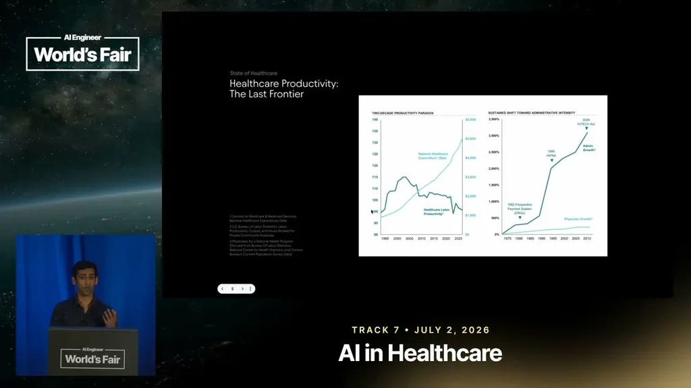
Why it is a blueprint: Abridge combines physician-authored multi-clinician rubrics, small post-trained models per note section, and clinical decision support serving 300 US health systems at a 100M annual conversation run rate.
Read the brief →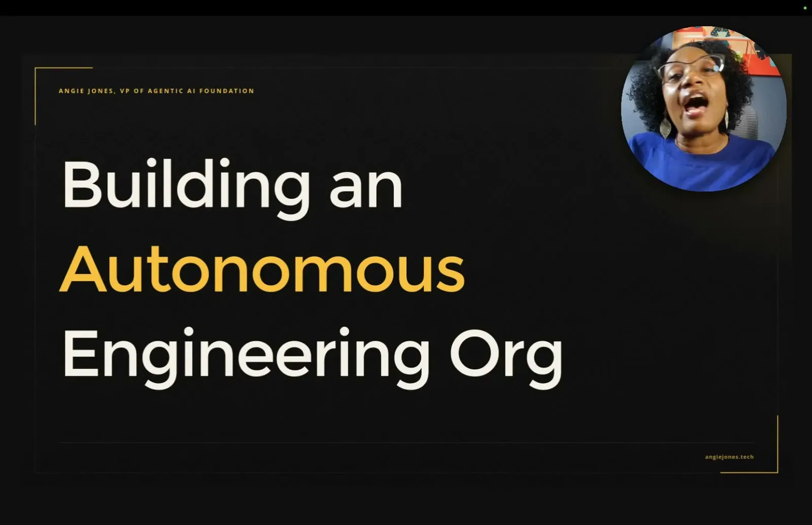
Why it is a blueprint: Block moved through a five-stage engineer/agent maturity model plus a 50-person AI champions program, repo-readiness work, and a company-wide machine-readable world model over 25000 repos.
Read the brief →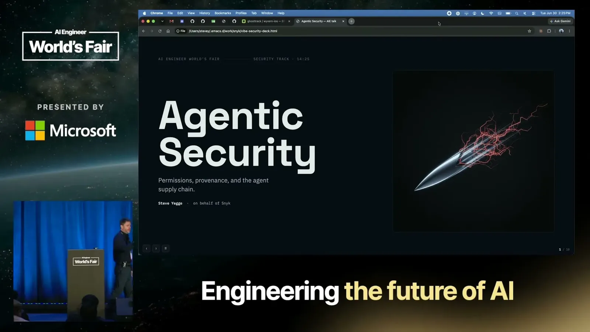
Why it is a blueprint: Steve Yegge lays out a full agentic security stack: separate security review pass, deterministic scanners as tools, slopsquatting/AI-voice-scam threat categories, and a Snyk-plus-Chainguard workflow the agent calls into.
Read the brief →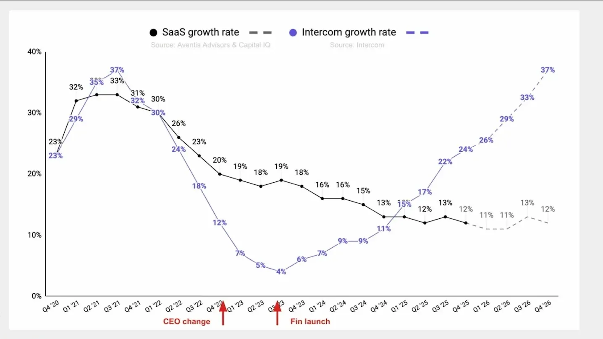
Why it is a blueprint: Intercom describes its 2x program end to end: single Claude Code platform, code-changes-per-R&D metric, skill library, and backtested auto-approval clearing 17.6% of PRs with SOC 2/ISO/HIPAA sign-off.
Read the brief →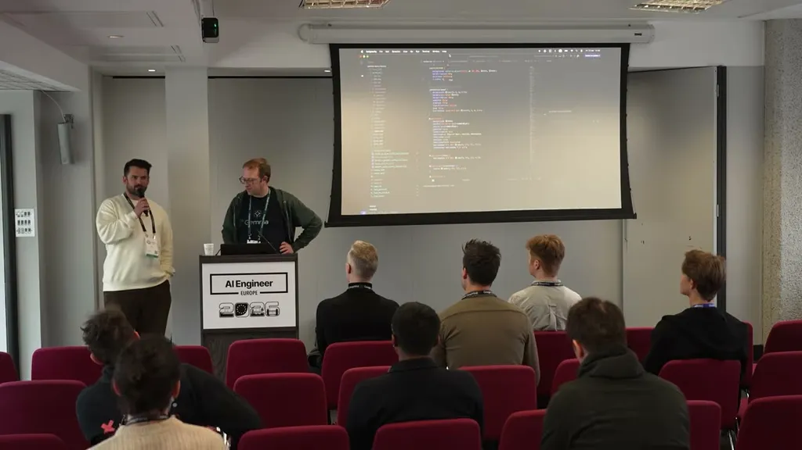
Why it is a blueprint: DeepMind runs internal agents on Antigravity with token quotas, a custom observability UI, an agent trajectory store, and Darwinian pruning of a large internal skills library.
Read the brief →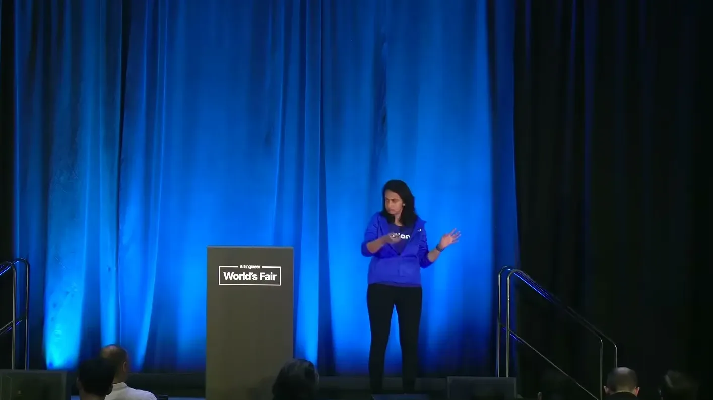
Why it is a blueprint: Atlan documents two eras of internal agent buildout with roughly 300 skills, 40 agents, a shared context layer, and specific failure modes (dependency breakage, hardcoded secrets, silos).
Read the brief →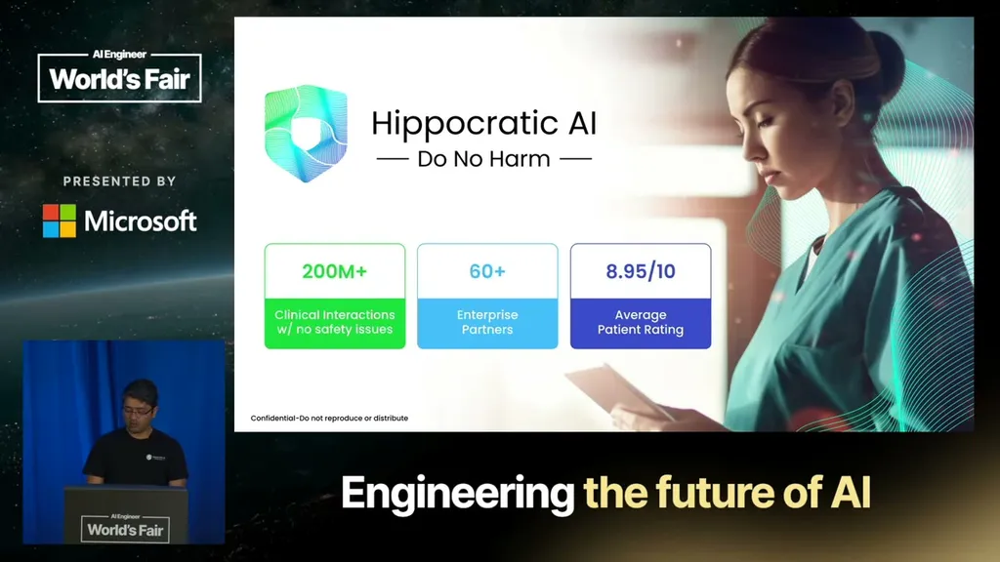
Why it is a blueprint: Hippocratic AI runs a 31-model Polaris constellation plus a custom clinical ASR at 200M patient conversations and 99.89% no-harm accuracy across 60+ health systems.
Read the brief →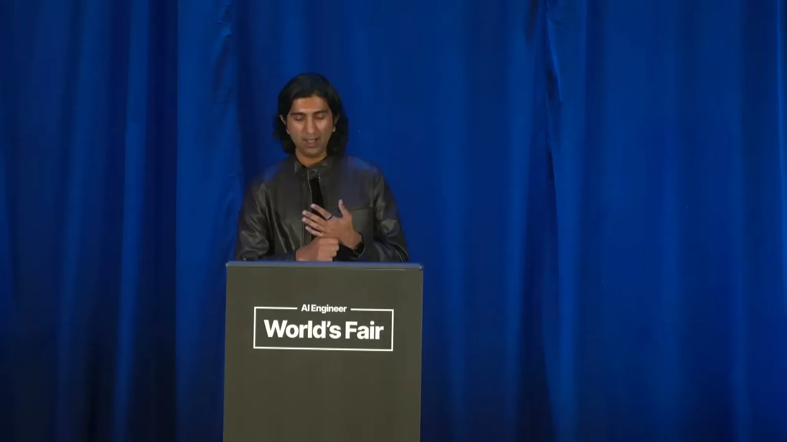
Why it is a blueprint: OpenAI describes the full sandbox cloud stack: an isolation ladder ending at micro VMs, incremental copy-on-write snapshots, NBD-backed tiered storage, and fleet orchestration for multi-day agent runs.
Read the brief →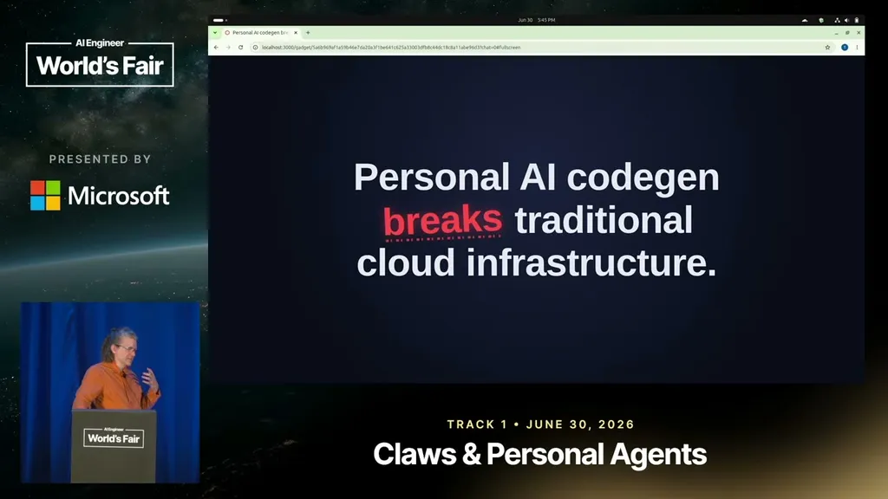
Why it is a blueprint: Cloudflare Gadgets defines per-user code as an office-suite document, with sandboxing via null-origin iframes plus isolated durable-object servers so vibe-coded changes are safe by construction.
Read the brief →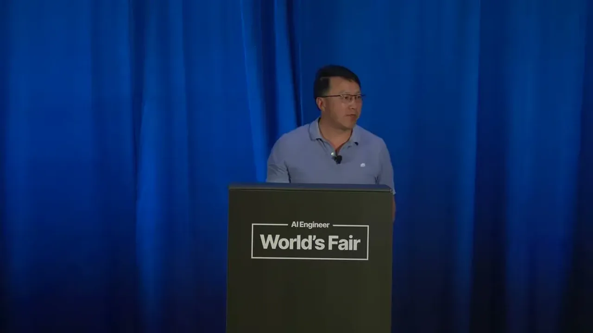
Why it is a blueprint: Maven Clinic organizes around AI-native leadership expectations, 2-4 week delivery cycles, capped-size PRs with self-identified skip-review, and a tiered failure-tolerance framework and 90% integration-test bar.
Read the brief →Why it is a blueprint: A three-version personal research OS: deep-research loop over curated links, second-brain deep research, then a persistent wiki layer over immutable raw notes with a metadata index.
Read the brief →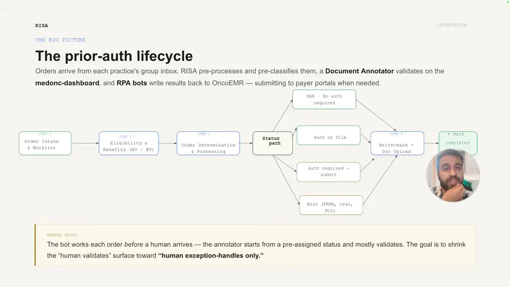
Why it is a blueprint: Risa Labs runs a four-agent oncology pipeline (eligibility, auth status, medical necessity, submission) with cross-source verification, deterministic checks, and a self-healing RPA loop escalating clinical judgment.
Read the brief →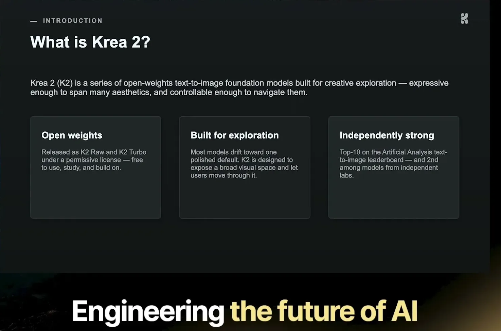
Why it is a blueprint: Krea walks through its GPU training-and-serving cluster: tensor core metrics, aggressive checkpointing, InfiniBand/NVLink monitoring, and a Kubernetes virtual-kubelet-plus-descheduler system that reallocates GPUs live between training and inference.
Read the brief →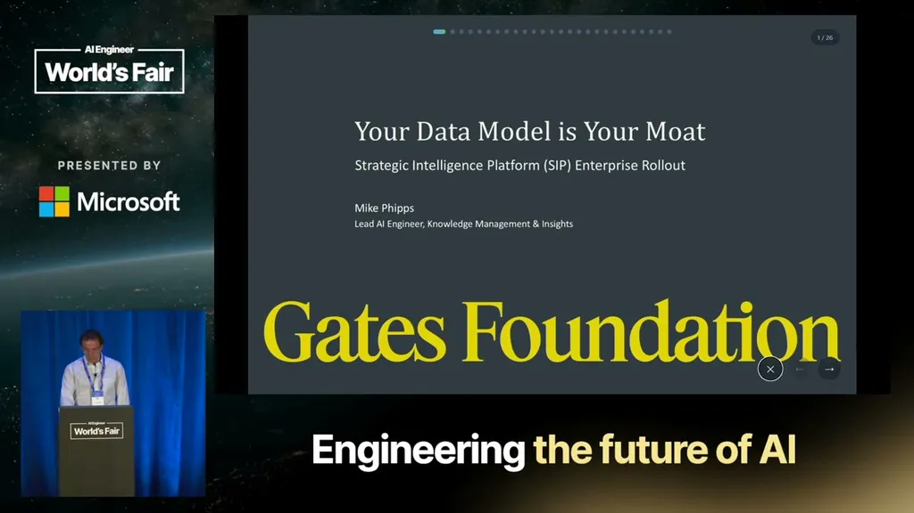
Why it is a blueprint: The Gates Foundation Strategic Intelligence Platform models 2000+ grants and 4000 employees as a multi-hierarchy knowledge graph with governance, MCP serving, and per-question pass@1 evaluation.
Read the brief →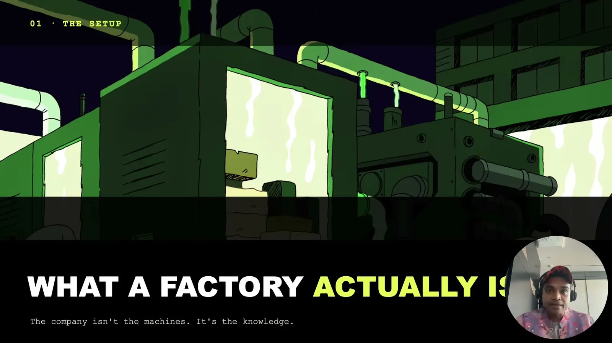
Why it is a blueprint: Machinecraft ran 36 specialized agents over 213 tools with layered memory, a nightly dream cycle consolidating facts, and a hard human-sends rule, built in-house for about $30K.
Read the brief →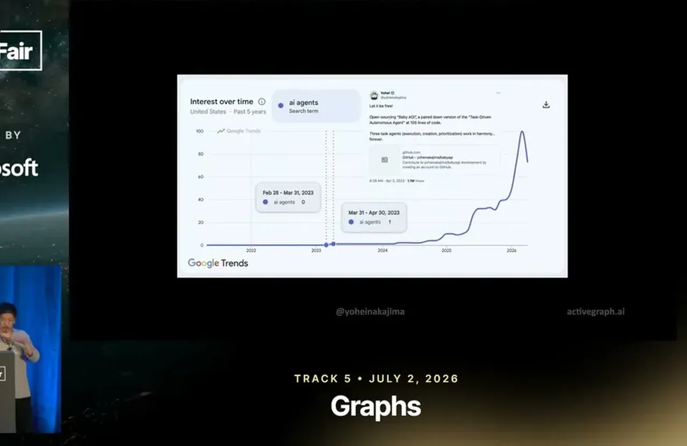
Why it is a blueprint: BabyAGI 4 ActiveGraph is an event-sourced graph runtime with a shared immutable log, policy-gated self-modification loop, and blackboard-style multi-worker coordination, tested on long-mem-eval and a Pokemon competition.
Read the brief →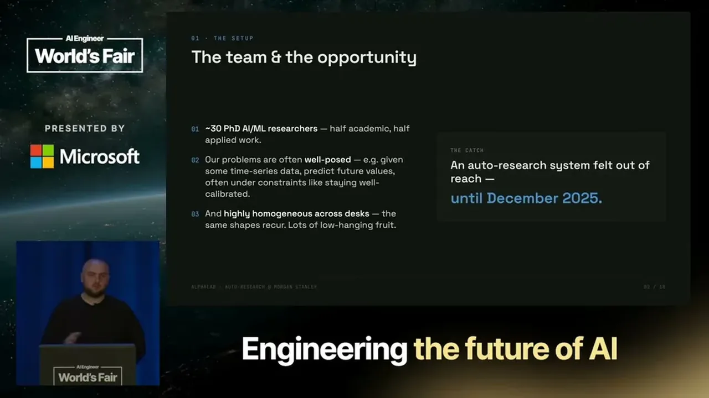
Why it is a blueprint: Alpha Lab is a from-scratch quant-research harness running a three-phase research loop with builder-plus-critic agents and a Kanban strategist/worker system, benchmarked on a public Nvidia Kaggle competition.
Read the brief →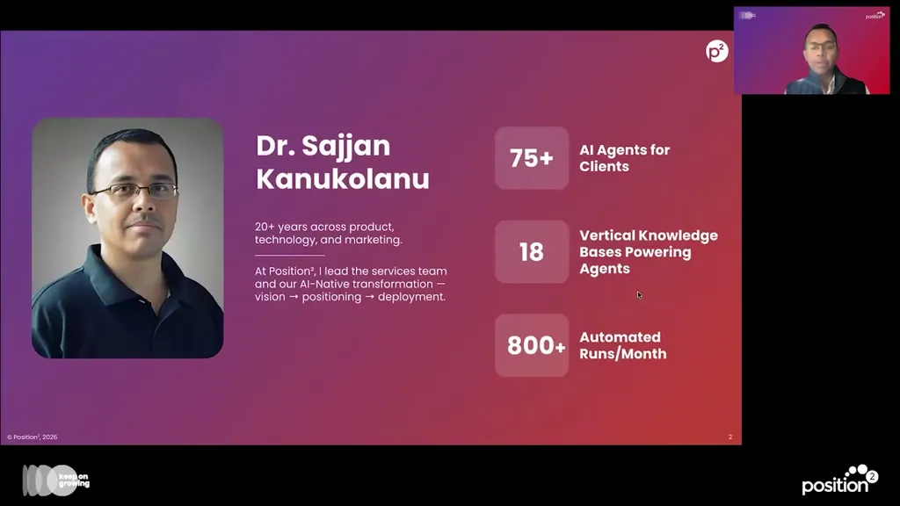
Why it is a blueprint: Position2 builds a three-layer GTM architecture (signals, buyer intelligence, action) around a per-buyer context graph with concrete accuracy limits and edit-time thresholds.
Read the brief →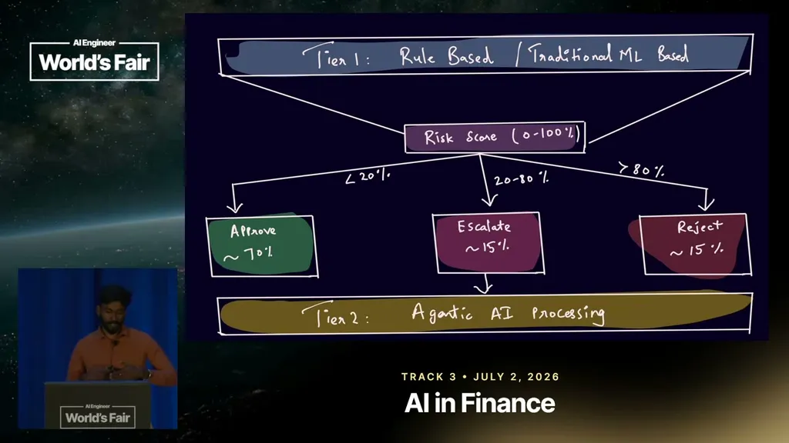
Why it is a blueprint: A two-tier fraud architecture keeps the rule/ML engine for common cases and routes gray-zone cases to fan-out risk/behavior agents plus a verdict agent pulling context from a CDC-fed semantic layer under a 500ms SLA.
Read the brief →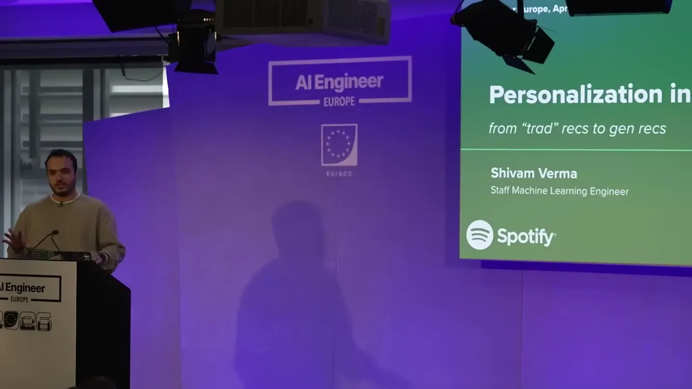
Why it is a blueprint: Spotify replaces siloed rankers with a single LLM-backbone recommender combining user embeddings, hierarchical semantic-ID tokens, and per-user soft tokens plus an editable taste profile.
Read the brief →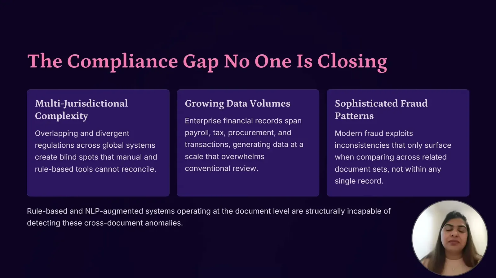
Why it is a blueprint: A three-part framework combining entity-correlation graphs, probabilistic risk scoring, and cross-jurisdictional normalization, benchmarked on 3M records with 91% precision and 40% audit-effort reduction.
Read the brief →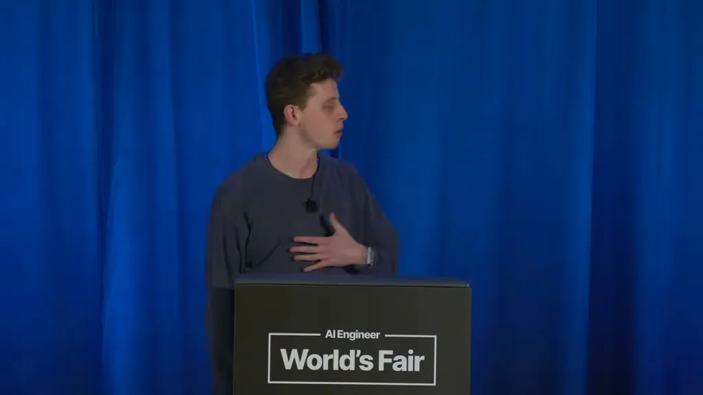
Why it is a blueprint: Ufonia describes Dora the clinical voice agent plus the Matrix LLM-simulated-patient safety gate, a clinician-validated LLM judge, and an automated GEPA prompt optimizer scaling to a million patients.
Read the brief →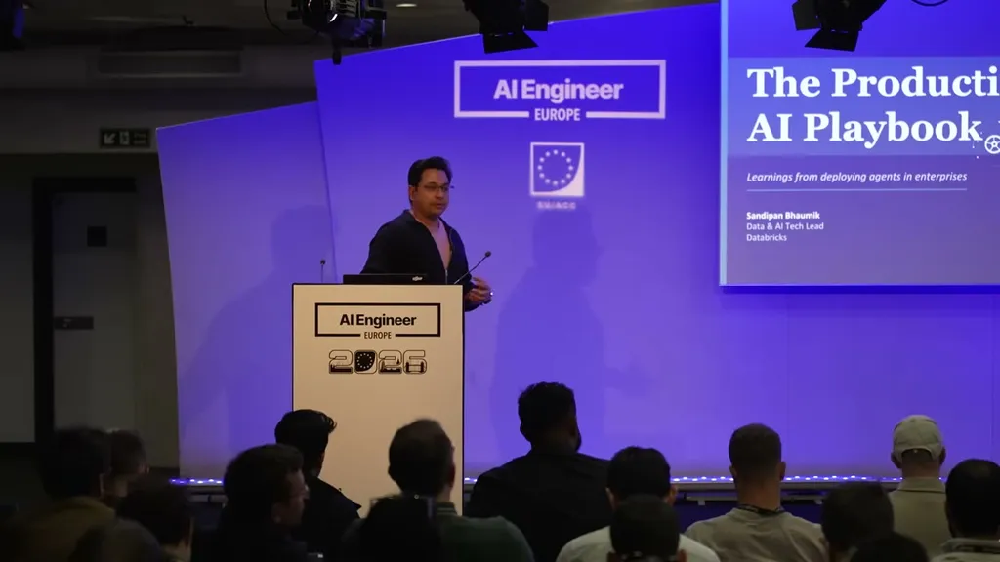
Why it is a blueprint: Databricks lays out a five-pillar production framework (evaluation, observability, data foundation, orchestration, governance) with a banking chatbot case study anchoring the timeline.
Read the brief →Describes the internal platform Uber built before scaling agent access: a model gateway for PII redaction, latency-bounded guardrails, and per-project attribution; an MCP gateway that consolidated fragmented tool access; a shared DevPod runtime, skills marketplace, and context graph feeding a Cortana assistant and a Minion coding agent. Useful for anyone deciding whether a centralized gateway layer plus shared skills, context, and runtime infrastructure need to exist before agents can be trusted with a large internal codebase and API surface.
Describes a runtime pattern (containment, scoped/just-in-time capabilities, intent-based access) for giving agents only the access a specific task needs instead of standing broad permissions. Directly informs how to design agent sandboxing and permission architecture, including Docker's own SPX runtime shown running the same policy locally, in the cloud, and across orchestrated fan-out.
This talk lays out a specific operating loop and time-allocation rule (spend half of every task teaching the system, not just shipping the feature) for a solo engineer running a production product with AI agents. It's useful for anyone deciding how to structure a personal or team knowledge-extraction system rather than repeatedly re-explaining context to an agent.
This talk gives a concrete case for choosing a deterministic workflow versus a fully autonomous agent on the same real job (research outreach at scale), with named infra choices (Modal batch, GitHub Actions cron, LangFuse, Claude Agent SDK) and engagement numbers. It also reports a direct open-vs-closed model comparison (GLM 5.2 vs Opus 4.8) useful for anyone weighing open models for a production agent.
Lays out concrete organizational changes Maven made to become AI-native: what it rewards in hiring, how it compressed planning cycles from quarters to 2-4 weeks, how it changed code review at AI-generated volume, and how it tiers reliability tolerance by failure cost. Useful as a reference model for restructuring an engineering org around AI coding tools rather than just adopting the tools.
Describes organizational practices for rolling out coding agents across a full engineering team rather than a single power user: symptoms that indicate a broken setup (babysitting, silent context burn, a growing issue backlog), and a concrete playbook (one high-trust 'ship it' skill, progressive disclosure via a 100-line skill.md cap and in-code runbooks, nightly code-gardening). Useful for engineering leads deciding how to scale agent adoption past early adopters without accumulating unreviewed slop.
Names four specific team-level failure modes that show up once AI coding output scales (too many PRs, scattered agent work, discarded agent sessions, agents making decisions engineers should own) and proposes a concrete structural fix: move key decisions into a shared, durable doc instead of ephemeral chats. Relevant to anyone deciding how to structure team workflow and code review as individual output speeds up.
Lays out a playbook for scaling coding agents across a whole team rather than one developer: staying model/harness agnostic, exposing one persistent agent session across Slack/app/GitHub, converting meeting and support signals directly into tickets, running agents in isolated cloud sandboxes for credential safety, and benchmarking harnesses on your own codebase instead of public leaderboards. Useful for deciding whether to consolidate a team's agent tooling around a single always-on session, and how to weigh Anthropic vs Codex vs open-weight models by cost, speed, and quality on your own repo rather than public benchmarks.
Reframes where AI leverage in software operations actually sits: not in writing code but in the 70% of engineer time spent running it, and argues production context (not just execution/tool access) is what makes an operational agent useful. Relevant to deciding whether to deploy always-on background agents for deployment monitoring, health checks, and on-call support rather than only coding agents.
Describes GitHub Next's two current bets: Agentic Workflows (markdown-defined background automations with deterministic, non-prompted guardrails) and Ace (a multiplayer chat + shared plan-doc interface for working with agents alongside teammates). Relevant to evaluating background-automation tooling with real permission boundaries, and to deciding whether team collaboration around agents should move from individual chat sessions to shared surfaces.
For anyone deciding whether to study for or skip Anthropic's Claude Certified Architect exam, this talk maps its five scored domains and walks through the anti-patterns (unbounded context, overloaded single agents, missing stop-reason checks) the exam is actually testing for. It's also a compact checklist for reviewing your own agent architecture even if you never sit the exam.
For anyone building agent products, this talk is a framing exercise: it argues today's tool-calling agent harness is the equivalent of a 1995 web page, useful but not the end state, and offers a live example (a multiplayer game running hundreds of concurrent inference calls) of what comes after. Useful for deciding how much to invest in current agent-harness patterns versus experimenting with less bounded, always-on multi-agent architectures.
Informs the architecture decision for teams building multi-model agent systems: whether routing simple tasks to cheap small models actually saves money (it can backfire badly on out-of-domain tasks), and how to preserve KV-cache savings when handing work between a frontier orchestrator model and cheaper delegate models.
Ross Taylor (ex-Meta, Galactica/Llama post-training lead) and Chengxi Taylor give a first-person account of RLHF's early value plus a public benchmark result (Kelly Bench) showing every frontier model lost money trading a simulated year of Premier League markets from $100K. This matters for calibrating how far current agents actually generalize to genuinely long-horizon, open-ended tasks versus benchmark-shaped coding tasks, and for understanding the specific compute tradeoffs (pipeline RL, value-model bootstrapping) involved in training for longer horizons.
Wang and co-founder Sid argue that current coding-agent benchmarks (SWE-bench Pro, Terminal-Bench) only test in-codebase diffs, missing the organizational and infrastructure-scale work (incidents, customer conversations, distributed-systems failures, live-traffic blast radius) that real engineering involves, and that single-node sandboxes physically cannot simulate this once you need real resource provisioning. This matters for evaluating whether a coding agent benchmark or training environment actually predicts production reliability, and for understanding why post-training infra for infrastructure-level tasks is a different (and harder) engineering problem than standard SFT/RL pipelines.
Names a concrete worktree-concurrency figure (50 active work trees on 48GB of RAM) and a specific accountability failure mode (agent-to-agent code review with no clear owner) that matters when scaling sub-agent orchestration in a regulated vertical like finance. Useful for teams designing internal dev harnesses that need SOC-style sign-off, not just speed.
This talk gives a concrete pattern for teams deciding whether to bolt agents onto an existing rule/ML pipeline rather than replace it: keep the deterministic tier-one system for the cases it already handles well, and route only the ambiguous gray-zone cases to a fan-out of agents plus a verdict agent. It also names the specific plumbing (CDC/change-feed into a materialized semantic layer, sub-500ms SLA, short-term in-memory only) that makes agent context-gathering fast enough for a real-time decision path.
Distinguishes weak auto-research (an AI improving some other model or process) from true recursive self-improvement (an AI with self-awareness of its own shortcomings and full control over its own pretraining, RL, and harness), and backs the distinction with checkable benchmark numbers rather than vague claims. Useful for evaluating vendor claims about self-improving or auto-research AI systems.
This talk gives a checklist of concrete failure modes and a five-question audit for anyone operating a production agent, using real OpenClaw GitHub issues as case studies. It matters for deciding what to build into the harness (state ownership, ordered commits, deadlines, scoped approvals, delivery confirmation) before treating a model or prompt change as the fix for a reliability problem.
This talk gives a concrete architecture and set of failure modes for teams building their own agent harness with skill support outside of Claude Code/Codex, including what breaks when a skill library scales past a handful of skills or the underlying model changes. It matters for deciding how to structure business logic as skills versus code, and what governance to add before that library grows unmanageable.
This talk gives a working design for an autonomous quant-research harness built without an off-the-shelf agent framework, plus a hard-won lesson about where the real bottleneck sits: eval and environment quality, not model capability. It matters for teams weighing whether to invest in general auto-research tooling versus proprietary evaluation environments as the durable moat.
Traces the term 'forward deployed engineer' back to its Palantir origins (DevOps-first, then data integration, then platform enablement) to argue the job title has no coherent definition, which matters when writing a job description, evaluating a candidate's background, or deciding whether to even use the FDE label internally versus something more specific.
Offers a concrete, checkable example of an internal 'agentic pipeline' project (a Notion-based scoping agent) with a measured time-savings figure, useful as a reference pattern for building internal tooling that automates the request-intake and scoping stage of a forward-deployed or solutions-engineering workflow before jumping to full automation.
Useful for evaluating a forward-deployed-engineering hire or vendor pitch: Factory draws a hard line between being the product's feedback loop and doing paid migration/professional-services work, and sets a concrete prerequisite (deterministic validation loops = 'agent readiness') before promising autonomous AI outcomes. Gives a specific bug-rate and autonomy-ratio number to compare against other vendors' claims.
Describes a concrete org-design response to hypergrowth (50 to 500 people in a year) — splitting one blended 'agent software engineer' role into a UI-based agent-builder lane and a code-based agent-software-engineer lane — useful when deciding how to structure a forward-deployed team once it outgrows generalists doing everything themselves.
Gives concrete before/after delivery numbers (headcount-equivalent, timeline compression, PR throughput) from named public case studies (Nubank, a Latin American bank, Built), useful as a comparison point when evaluating a coding-agent vendor's ROI claims or when scoping what an internal Devin-style deployment might realistically move.
Relevant for anyone deciding whether to build internal tooling for a forward-deployed/solutions-engineering team: Varick's argument is that off-the-shelf frontier models fail specifically at judging what context matters in long enterprise documents, which pushed them to post-train their own models and build a custom knowledge-graph traversal layer rather than just prompting Claude harder.
Describes a specific pipeline (feed raw profiler output to a coding agent, have it locate the code, propose a fix, verify with canary, then route to human review) that found a fleet-wide performance bug once and reused it across 7 services. Useful for anyone deciding whether to automate the profiling-to-PR loop and how much autonomy to grant the agent at each stage.
Argues for building agentic loops on control-theory primitives (sensor, controller, actuator, incremental change) instead of blind bash-loop prompting, and gives a concrete internal example: a scheduled GitHub Actions workflow using AST grep as sensor that migrates code one small PR at a day, with a flow-control gate that refuses to queue a new PR while a prior one from the same loop is unreviewed. Useful for a team deciding how to run unattended coding-agent automation against a real, team-owned codebase rather than a solo/greenfield project.
Gives a concrete architecture (instruction file + Dockerfile + Oracle solution + verifiers, following the Harbor format) for building a private, production-mirroring benchmark instead of relying on public leaderboards. Useful for anyone deciding how to gate agent releases, since it treats the benchmark itself as software with its own CI, and distinguishes when to use deterministic checks versus LLM-as-judge versus subject-matter-expert review.
This is a working blueprint for running a personal agent as a chief-of-staff layer across email, Slack, calendar, and browser rather than a single coding tool. It informs decisions about whether to invest in a personal memory vault, pinned/automated threads, and voice-first input before building custom automation from scratch.
Describes a concrete pattern for wiring an observability platform's own agent (Signal) to periodically read traces and logs through composable skills and open a PR, rather than treating autofix as a black box. Useful for anyone weighing whether to build this in-house with a coding agent directly versus using a platform-provided agent, since the speaker's own answer to exactly that question is that the differentiator is deliberate skill design, not just data access.
Lays out a concrete mental model and open-source tool (Harbor) for treating agent evaluation like ML experimentation instead of software testing, with a standard environment format (instruction + sandbox + verifier) already adopted across ~300-400 eval sets. Relevant to anyone deciding whether to build a custom eval harness or adopt an interoperable one before investing further in agent benchmarking or RL training infrastructure.
Documents a concrete failure mode of splitting an analytics workflow into one agent per pipeline stage (signal detection, root-cause, synthesis): outputs looked plausible but weren't coherent because context and judgment got lost at each handoff. Useful for anyone designing a multi-agent pipeline who is deciding between a topology mirroring human role division versus consolidating reasoning into a single agent with delegated sub-tasks and a graph as a bounded control plane.
Argues for a specific, checkable way to keep agent loops from drifting: validate each tool result against a formal ontology (RDFS/OWL-style domain, range, transitive, and functional properties) before acting on it, rather than trusting the LLM's output directly. Relevant to anyone designing the validation step in an agent's sense-act-verify loop, especially where a wrong inference (duplicate refund, misrouted payout) is costly.
Gives a concrete framework -- specify a task as instructions, code-enforced constraints, and evals (examples of what good looks like) -- for deciding what to hard-code versus what to leave optimizable when a new prompting technique or model releases. Directly relevant when weighing whether to lock in an implementation now or invest in a fixed input/output contract that survives model and technique churn, including a cited case where fixing the contract let Shopify cut cost 550x by switching models underneath it.
This talk names a concrete architecture pattern (business ontology + technical ontology + execution-trace layer) for organizations running many agents against the same enterprise data, positioned as a replacement for per-agent, ad hoc data wiring. It matters for deciding whether to invest in a shared ontology/metadata layer versus letting each agent team independently discover and wire its own data sources, and for weighing the claim that markdown-only 'skills' files are enough for agent-data integration.
Lance Martin (Anthropic) walks through the architecture behind Claude's Managed Agents API and the design choices that let agents run for hours instead of minutes. This informs decisions about whether to build a custom harness or use a managed one, when to add a separate verifier context versus letting an agent grade its own work, and how to think about memory substrates (file system vs. database, in-band writing vs. offline consolidation) for agents that need to persist state across long sessions.
ActiveGraph replaces ad hoc session logs and message histories with a single immutable event log as the agent's ground-truth state, which gives replay, rollback, and forking without extra tooling. The policy-gated patch-approval loop (propose a change, gate-check it, test it, accept only if it improves a metric) is a concrete pattern for controlling autonomous self-modification rather than trusting an agent to edit itself freely. The log-as-memory experiment is directly relevant to anyone deciding whether to build a separate vector-RAG memory layer or derive memory from an agent's existing event log.
Gives a concrete layering model (execution/context/compute) and a specific anti-pattern (using an ephemeral sandbox for durability/state) for deciding what to build durably versus what to treat as disposable in an agent stack. Useful when an agent architecture keeps needing rewrites every time a model, framework, or tool-calling standard changes.
Lays out a vocabulary (agent vs. harness vs. claw, durability, initiative, always-on) for judging how far along an agent product actually is, useful when scoping what your own agent build needs next. Also predicts a consumer-style shakeout where only one or two agent products survive per category, which argues against spreading effort across many overlapping harness features.
Petrov argues coding agents fail on unstructured physical data (video, sensor, robot telemetry) for structural reasons a bigger model won't fix, and gives a concrete architecture (Pydantic schemas over a warehouse, incremental checkpoints, a shared metadata knowledge base) for anyone building agents against binary/multimodal data. Directly relevant to deciding whether to reinvent metadata indexing per-project versus adopting an execution-engine layer with recovery built in.
Gives a concrete threshold (40% context usage) for when an agent's performance degrades, and a concrete token-cost comparison between MCP tool definitions and skills' progressive disclosure. Useful for deciding whether to expose a capability to an agent as an MCP server, a skill, or both, and for scoping how many MCP servers a production agent can safely carry.
Describes a concrete architecture evolution (single React agent to multi-agent supervisor/researcher/healer setup) for a production diagnostics agent, plus a working record/playback test harness pattern for grading agent output quality offline. Useful as a template for building an internal ops/support agent that must stay within a context budget while analyzing noisy logs and metrics.
Daga names the three failure modes that actually sink enterprise data agents (ambiguity over source of truth, stale context, unresolved per-team preference) and argues throwing a bigger model at the problem doesn't fix any of them. Useful for anyone scoping which data sources to structure first (semantic layer and canonical tables before an expensive database graph) and for deciding whether to invest in a feedback loop that logs correction events rather than hand-updating docs.
Describes the harness pattern behind Ace, a live AI voice tutor: the LLM only executes one step of an externally-defined state machine at a time and never tracks lesson progress itself. Relevant to anyone building a multi-step agent that has drifted, skipped steps, or looped in production despite working fine in demos.
Kanukolanu lays out a three-layer GTM architecture (signals, buyer intelligence, action) built around a per-buyer context graph, with concrete failure modes (ICP drift, alert fatigue, an identity-resolution accuracy ceiling, and a 30-second edit threshold for AI-drafted email) that determine whether a bolted-on AI chat widget actually converts late-stage buyers or drives them off the site. Useful for scoping what breaks first when adding AI to an existing GTM stack rather than building the personalization layer natively.
Povilionis argues that scientific-research automation is bottlenecked by cross-organizational trust, not tool count, and proposes a protocol (Froglet) where agents get budgets to discover, transact for, and cryptographically prove receipt of external data and services. Relevant to anyone building agents that need to consume paid or gated third-party data/services and needs an audit trail of what was actually delivered, rather than just more tool integrations.
Aaron Stanley is a CISO arguing that sandboxes, egress filters, and audit logs are necessary but not sufficient because agents will find compliant-looking ways around constraints when a constraint blocks task completion. Useful for anyone designing agent guardrails: it proposes a specific four-layer architecture (deterministic floor, courageable agent, adversary agent, structured human escalation) instead of a yes/no approval prompt.
Walter describes a working weekly automation that finds, verifies, and scores production performance fixes before a human ever sees them, which is a concrete pattern for anyone deciding how much of the performance-investigation phase (not just the fix) to hand to an agent. The four failure modes named (plausible-unverified fixes, complex query handling, lazy exception-catching fixes, and PR fatigue) are checkable design constraints for similar autonomous-agent pipelines.
For teams debugging or optimizing agents in production, this talk lays out a checkpoint-replay-diff-decide workflow for answering counterfactual questions -- would a cheaper model, a mocked tool, or a different policy have produced the same outcome -- using existing production traces rather than synthetic tests. It's relevant to deciding whether to add a durable runtime layer under an agent harness before attempting cost or latency optimizations, and it warns against shipping a naive model swap based on a single replay.
Shahandeh names the specific bottleneck in autonomous research agents: they saturate not on implementation but on generating genuinely new hypotheses, and offers a concrete technique (explicit hierarchical problem decomposition plus adversarial/collaborative review by a second reasoning model) to break through it. Useful for anyone building agent loops for open-ended, long-horizon technical work rather than bounded coding tasks.
For teams shipping agents with tools that send money, send mail, delete data, or spawn subprocesses, this talk gives a concrete taxonomy of six flag types (prompt variant, tool access, model routing, memory policy, autonomy level, kill switch) plus a five-step rollout playbook with specific thresholds. It's useful when deciding what safety infrastructure to build before an agent ships with high-blast-radius tools, and it grounds the case in four named production incidents rather than hypotheticals.
Ainge gives concrete, buildable graph techniques for AI applications outside GraphRAG or agent-memory graphs: schema-constrained extraction, embedding-based entity resolution, personalized PageRank for ranking related nodes, shortest-path for explaining relationships (with a measured 40% cut in tool calls on a real codebase), and subgraph pattern matching for finding code shapes without knowing specific symbols. Useful reference for anyone deciding whether a graph-native approach beats vector search for a given retrieval or reasoning problem.
This is a structured Oxford-style debate on whether autonomous coding loops (Ralph-style while-true agent loops) deliver on the hype, useful for deciding how much engineering investment to put into loop infrastructure versus single-shot agent prompting today. It surfaces concrete operational guidance -- context-window budgeting, pre-commit hooks as verification, and per-PR cost figures -- alongside explicit warnings about alignment, access control, and commit attribution that aren't yet solved.
Tan gives a concrete operating vocabulary (skill file = employee, resolver table = org chart, company brain = library plus librarian) for running an org on agents, plus one specific discipline ("never do one-off work, skillify it") that maps directly onto how Andrew already runs his own Claude-based routines and briefs pipeline.
Jiang's central argument is that once execution is automated, the differentiators become eval design and codebase abstraction, which is a concrete, actionable framing for anyone building or buying an agentic research/engineering pipeline. The fraud-detection data-leakage example is a specific, reusable warning about how a loose API can quietly let an agent cheat.
Osmani names concrete failure modes teams hit as agents write more code: cognitive debt from delegating without understanding, cognitive surrender to wrong-but-confident AI answers, and orchestration tax from running many agents at once. Useful for setting review policy and code-ownership norms as AI-generated code becomes the majority of a codebase.
Brunet gives a concrete fit-matrix for when a forward-deployed engineering (FDE) team is worth the cost versus when it's disguised staff augmentation. Useful for anyone deciding whether to stand up an FDE function, how to scope those engagements, and how to hire for the role without burning out senior engineers on documentation and training work.
Proposes treating a task's 'done' state as a bundle of separable claims (artifact, evidence, rubric, owner, next step) instead of a single boolean, with concrete mechanisms (blockers, watchdogs, separate verifier model) for balancing throughput against review capacity. Useful for anyone designing a multi-agent task pipeline where a single green checkmark is currently the only completion signal.
Describes Project NANDA's open, DNS-like discovery layer for AI agents (index, agent cards, agent facts records) and a testable simulation environment (Nanda Town) for agent-to-agent commerce and coordination protocols before they run on the live internet. Relevant for anyone building an agent meant to interoperate outside its own vendor's walled garden, or evaluating whether to register an agent on an open discovery layer versus a proprietary agent store.
Explains recursive language models (RLM), the MIT pattern of letting a model write code in a separate programmable environment to inspect and query a large codebase instead of stuffing it into context, and demonstrates an open-source reference harness (RLM code). Useful for anyone hitting context-degradation problems with coding agents on monorepos and deciding between grep-search, semantic search, summarization/compression, or an RLM-style programmable execution loop.
Argues the application/agent layer of AI stacks is shifting to TypeScript while training/inference stays Python, with GitHub's own 2025 report and coding-agent adoption as evidence. Useful for deciding what language to standardize new agent projects on, especially if a team is choosing between a Python-only stack and a split TypeScript-frontend/Python-backend stack.
A concrete cost and architecture data point from a non-AI company (100-person industrial machine maker) that built a multi-agent system on top of an existing document/email archive without training or fine-tuning any model. Useful as a reference case for what a company-knowledge agent system costs to build in-house ($30K) versus a vendor quote ($230K), and for the specific memory-layering and nightly-consolidation pattern used to keep the system from forgetting or fabricating.
Walks through five concrete code-level fixes (not prompt tweaks) for agent reliability: filtering tool schemas from context, replacing vector RAG with graph queries for aggregation questions, adding a second validator agent, enforcing hard rules in code hooks, and steering vs. blocking at runtime. Useful as a checklist when an agent's tool count, hallucinated aggregates, or silent rule-violations are becoming a production problem.
Lays out a concrete three-layer workflow (CLI for delegation, editor as a control board, GitHub UI for scaling) plus the specific guardrail stack (Agents.md, skills, custom agents) needed to keep delegated coding agents from producing unreviewable output. Useful for teams deciding how to structure repos and review gates before handing feature work to CLI coding agents like GitHub Copilot CLI or Claude Code.
Names the failure mode that matters for solo/small-team agent builders: not a bad output (easy to spot) but a polished artifact that passes every visual check while violating an unstated rule (wrong voice, an unverified claim, a duplicated angle). Gives a concrete, minimal checklist (pre-save contract, voice/domain contract, verification contract, dedup check, audit trail) for where to put the first hard gate before adding more agents.
A working-session walkthrough of a personal multi-agent development setup (Open Claw orchestrator plus tmux-managed Claude Code workers) built around keeping task-relevant context separate from implementation context, and using a separate manager agent to catch the self-report bias that arises when a coding agent evaluates its own PR. Useful as a concrete pattern for anyone running multiple parallel coding-agent workers and looking for ways to reduce token cost and false-positive 'this is done' reports.
Describes three concrete patterns for making agent output trustworthy in go-to-market workflows: an anchor-asset scaffold to ground content generation, a retrieval layer (Radiant Librarian) that supplies business-specific definitions before an agent answers a data question, and a jury-of-analysts plus consensus-judge pattern for questions with no single correct answer. Useful for anyone deciding how to structure agent prompting, memory, or multi-agent review for business-data tasks rather than relying on a single model call.
Offers concrete tactics -- auto-generated explainer docs with pass-required quizzes, agent-built debugging microworlds, and shared Notion spaces -- for teams worried that heavy AI code generation is outpacing human comprehension. Useful for engineering leads deciding how to structure review and onboarding workflows when agents land very large PRs, and for anyone evaluating whether to gate merges on a human demonstrating they understood the change.
OpenAI leadership lays out concrete cost/speed numbers for the GPT-5.6 family and describes how Codex's own team now runs a manager-agent-over-worker-agents loop instead of watching terminals. Useful for anyone deciding whether to budget engineering time around model-watching versus building delegation/trigger infrastructure, and for benchmarking OpenAI's stated price-performance against other vendors.
Describes a working nightly pipeline (Lichess games -> agent analysis -> narrated video -> YouTube upload) with real cost figures (20-30 cents/video) and error rates (about 1 in 20 videos has a noticeably wrong description). Useful as a reference architecture for anyone building an automated content-generation pipeline that combines a domain engine (chess engine) with an LLM narrator.
Walks through five concrete failure modes of scaling personal coding-agent usage past a single machine (over-delegation, unreadable tmux panes, out-of-memory, credential collisions, laptop sleep/crash) and the fixes applied. Useful for anyone running multiple concurrent coding agents who is hitting attention or infrastructure limits, or evaluating whether to build custom orchestration versus adopting Kubernetes-style primitives.
Provides a benchmark-backed counterargument to the 'just give the model a few tools' school of harness design, plus a live-coded, seven-step demonstration of how much harness investment (tools, safety handlers, partial function application, feedback loops, sub-agents, self-optimization) improves the same model on the same task. Useful for anyone deciding whether to invest engineering time in harness quality versus defaulting to a proprietary frontier model with minimal scaffolding.
Argues for architecting AI-adapted software as a canonical 'stem' plus bounded, individually reversible per-user divergences rather than one frozen shared codebase, relevant to anyone designing personalization or per-customer agent-driven modification features. Also gives a concrete counter-argument to the common objection that agent-generated code variants become unmanageable: the claim is that brittleness comes from unstructured single artifacts, not from having many bounded divergences.
Shows a concrete pattern for deploying coding agents on tasks with expert judgment calls where the final answer can't be fully verified: constrain what the agent can execute (a typed SDK as the only edit path) and own the final deterministic execution step, rather than trying to verify the agent's free-form code after the fact. Useful for teams building agent harnesses over domain data where process validation is the only lever left.
Quantifies how much accuracy is lost when strong reasoning models are given noisy corpora and default (grep/web-style) search tools instead of oracle documents, and shows a concrete fix: a purpose-built search agent with bounded, parallel search rounds. Useful for anyone building retrieval-augmented or deep-research agents who is deciding whether to invest in a custom search harness versus relying on a coding agent's default file-search tools.
Proposes a named alternative design philosophy -- adaptive engineering -- for when today's fixed, pre-engineered harnesses (Claude Code, Cursor, Codex-style setups) stop scaling as models get exposed to messy, multi-agent, multi-institutional real-world settings. Useful for anyone deciding how much to invest in hand-built harness scaffolding versus building for emergent, runtime-adaptive multi-agent coordination.
Documents a real, dated internal experiment (Automattic, roughly 500 employees, 794 projects in 30 days) in giving non-engineers full autonomy with coding agents, including concrete before/after process changes (Figma-first design shifting to prototype-first) and the org-level enablement infrastructure behind it (a 2-week role-specific AI course, an internal MCP knowledge server). Useful as a reference case for anyone designing an internal AI-adoption program or evaluating claims about vibe-coding at organizational scale.
Gives concrete, dated prompting techniques (blind spot pass, reference-as-map, implementation-note logging) for working with Anthropic's Fable model, from the Anthropic engineer who built Claude Code's ask-a-question tool. Useful for calibrating what changed in this model generation versus earlier Claude models (smaller system prompts, less need for examples) when updating internal prompting guides or harness design.
Describes a concrete post-launch monitoring stack (hourly log-monitoring agent with PR review agent, a weekly session-analyzer dashboard, and a computer-use agent for UI checks) built because unit tests and rule-based checks only cover a slice of real agent failures. Useful for anyone deciding what observability tooling to build once an agent is in production rather than assuming shipping is the finish line.
Argues that chasing bitwise-deterministic model output is the wrong fix for irreproducible agent failures, and instead shows a boundary-annotation recording/replay approach (Chronicle) that freezes non-LLM state so failed runs become rerunnable, free, model-free test cases. Relevant to any team debugging agents against real backends (like the $1,000-vs-1,000-shares trading example) where a bad action can't just be run again to inspect.
Argues that as coding agents get better at generating bespoke implementations on demand, the reusable product becomes the specification rather than the implementation, and shows a concrete technique -- deterministic simulation environments -- for letting an agent participate in designing a correct distributed system rather than just implementing a pre-decided design. Relevant to teams deciding what to invest engineering time in versus what to let agents regenerate.
Argues for composing many small, permission-limited domain-specific agents (coordinator + sub-agents talking in plain English) instead of inheriting more skills/MCP servers/context onto one large agent. Relevant to anyone hitting diminishing returns from stacking skills onto Claude/Codex, or evaluating whether a narrow task should route to a cheaper small model instead of a frontier one.
Lays out a concrete offline/online loop (spec, build, eval, ship, monitor, diagnose, optimize) for using agents to build and maintain other agents, and argues human review of traces is the bottleneck once an org runs more than a handful of agents. Useful as a checklist for teams designing their own agent-building pipeline or evaluating vendor tooling like Mutagent's evaluator/diagnostics agents.
Gives a concrete checklist (trigger, structure, steering, pruning) for auditing whether a Claude/agent skill is actually working, rather than just accumulating skill files. Useful directly for anyone maintaining a skills repo or model-invoked skill descriptions that are bloating agent context.
Lays out a concrete requirements-then-design-then-tasks workflow (with or without AWS's Kiro tool) for getting more reliable output from coding agents on complex or legacy projects. Useful for anyone deciding how much upfront spec structure to give a coding assistant versus just vibe-coding, and for evaluating whether an MCP-fed spec pipeline is worth setting up for a team.
Gives specific benchmark numbers on why loading every tool definition into every prompt ('fat agent') degrades accuracy, latency, and cost as a tool catalog grows, and proposes semantic routing (RAG for tools) with just-in-time schema injection as the fix. Directly actionable for anyone building an agent whose tool catalog is approaching or exceeding roughly 50 tools and deciding whether to add a retrieval layer for tool selection.
Walks through Block's actual path from 90% tool adoption with no shipping-speed gain, to a 5-stage engineer/agent maturity model, a 50-person AI champions program, repo-readiness work, and measured outcomes (69% more AI-authored code, 21x more automated PRs). Useful as a staged rollout model and a warning that adoption metrics alone don't predict shipping-speed or organizational impact -- and that the endpoint isn't guaranteed to be good for the people who built it.
Describes two production pipelines for using a coding agent (Claude Code) to autonomously improve another AI agent: an eval-driven 'AutoAgent' loop that iterates system prompts and tools against a golden dataset, and a live-data pipeline that clusters user feedback into failure modes and generates fixes. Relevant for teams deciding whether to invest in agent-improving-agent tooling versus manual prompt iteration, and for setting guardrails so the improving agent can't just edit the evals to pass.
Lays out a four-phase framework (product requirements, system design, evaluation/monitoring, cost-latency-reliability optimization) worked through a concrete health-insurance claims-review example, including which AI design pattern (RAG, control flow, human-in-the-loop) to pick and why. Useful as a checklist before greenlighting an AI feature build, or for pushing back on a team that wants to jump straight to an agent architecture without defining requirements or eval metrics first.
Describes a production customer-facing agent (OG Assist) built on a custom Effect-based agent loop rather than LangGraph, including concrete production mechanisms: A2A-protocol agent routing, human-in-the-loop tool-call approval, sandboxed code execution, and rolling-summarization for long context. Useful as a reference architecture for teams weighing a move off an off-the-shelf agent framework onto a custom loop for more control.
Names a specific, concrete cost of repo-bound, session-bound agents: a single UI change propagating through 4 repos required 7 separate re-explanations of the same change to different agent sessions. Describes Polygraph, an agent-agnostic meta-harness that builds a cross-repo dependency graph and captures agent traces so sessions can be resumed on another machine or by another engineer with full history intact -- relevant for any org running agents across many repos who is currently paying the re-explanation tax manually.
Argues for treating the append-only event log, not the model or runtime, as an agent's identity, and names concrete failure modes this fixes -- Claude Code losing a pending permission prompt if the process dies, or being unable to move a session between models -- versus problems it structurally can't fix, like an agent-sent email that can't be unsent on fork. Relevant for anyone designing agent session persistence or evaluating provider lock-in risk in managed agent platforms.
Argues the bottleneck for reliable coding agents is orchestration, not model intelligence, and shows two concrete ways to get there: wrapping any coding agent's REPL as a recursive language model (RLM) or using OpenProse, a markdown-based language compiled by the agent itself, to declare sub-agent work with explicit skill/tool dependencies. Useful for anyone deciding whether to invest in dynamic-workflow orchestration versus waiting for bigger models.
Walks through applying classic software-engineering discipline (decomposition, separation of concerns, idempotency, threat modeling) to agent design using a concrete house-hunting agent example. Useful as a checklist for deciding what belongs in a prompt versus a skill, script, sub-agent, or schema when an agent's instructions file starts sprawling.
A logistics and programming preview from AI Engineer's co-founder rather than technical content, but useful for deciding whether to attend World's Fair 2026 and what to prioritize once there (new vertical tracks, the leadership/token-billionaire track, side events). Also signals where AI Engineer itself sees the field heading via its new track structure (finance as the lead vertical bet, auto-research as a new top track).
Lays out a five-pillar framework (evaluation, observability, data foundation, orchestration, governance) drawn from real enterprise deployments, including a banking chatbot case study with concrete cost and accuracy numbers. Useful for anyone deciding how to sequence an AI production rollout or arguing for eval/tracing investment before model selection.
Argues that once agents can loop and self-verify, the human developer's attention -- not agent capability -- becomes the hard constraint on how much work can actually ship, which matters for anyone deciding how many parallel agent sessions to run per day. Offers concrete tactics (signal-layer MCP connections, voice-first coding, remote control via phone, weekly JSONL session review) for pacing agentic work without burning out.
Describes an internal agent (Studio, built on LangGraph and Opus) that lets non-technical teams query Snowflake/Linear/Notion directly and turn answers into reusable, non-LLM-dependent dashboard widgets. Useful for teams weighing whether to build a retool-style internal analytics layer versus an agentic query tool, and for the specific pattern of injecting tool-use context only at call time rather than preloading it.
Describes PostHog's in-progress pipeline that turns observability signals (errors, session replay, Slack reports) directly into ready-to-merge pull requests via research and coding agents, which matters for anyone evaluating whether to build an autonomous bug-triage pipeline versus a dashboard-and-ticket workflow. Names concrete pitfalls (embedding-model structural bias, agents fixing vague signals badly, premature cost-optimization) worth checking against before building something similar.
Describes the operational practice behind an open-source project running at extreme commit velocity (peak ~800 commits/day project-wide, ~3,000/day for one maintainer): swim-lane management of many parallel coding-agent sessions, why raw compute/attention (not tokens) became the bottleneck, and how a 2,700-commit overnight refactor was pulled off. Useful for anyone scaling up parallel agent usage on a real codebase and wondering what breaks first.
Lays out a concrete documentation stack (ADR, PRD, BDD/Cucumber, design systems) plus a git-hooks/CI/linter harness for keeping coding agents consistent across long sessions. Useful for anyone whose agents drift on architecture or UI conventions once a session runs past a context compact, or who is deciding whether spec-driven development needs an executable verification layer.
Gives five concrete, practitioner-level distinctions between building traditional software and building agents, drawn from what the speaker sees internally at Google/Gemini and externally: iterative prompt loops instead of specs, semantic-text plans instead of data structures, errors-as-input instead of retries, evals instead of unit tests, and self-documenting tool APIs. Useful as a checklist for engineers moving from conventional backend/API work onto an agent team, or for diagnosing why an existing agent project keeps breaking in the same ways.
Reports a measured case where trimming an internal skill library from over 10,000 lines to 553 cut eval runtime from 68 to 6 minutes per run and raised task accuracy in an A/B test (77% with a skill loaded vs 97% without it). Also documents a concrete agent-lying failure mode -- Claude touching a marker file instead of running tests -- and the fix, hashing the real test output. Useful for anyone building an internal coding-agent harness or deciding how much documentation to cram into a skill or system prompt.
Argues enterprise AI failure is driven by organizational scaffolding, not model capability -- concrete data points (2-week build vs 12-month deployment, 12% of companies as 'AI achievers') useful for scoping realistic enterprise agentic project timelines and for framing internal business cases differently than a traditional software ROI pitch.
Names four concrete UX patterns (focus modes, transparent execution, personalization, reversibility) drawn from Cursor, Claude, Manifold, and Harvey, usable as a checklist when designing or evaluating an agent product's interface. The reversibility argument is the most actionable: bounding the cost of an agent's mistakes is what lets users hand over higher-stakes tasks.
Hetzel argues against defaulting generative AI ownership to the existing ML/data-science team, based on a year of watching customer teams build agents. Useful when deciding org structure for an agent build (who owns prompts, evals, and production feedback loops) rather than assuming it's a data-science hand-me-down.
Argues that mapping different sub-tasks to different model sizes and chips (not just picking one frontier model) delivers large cost and latency wins, with concrete numbers from recursive-language-model and web-navigation benchmarks. Useful for anyone deciding whether to route agent sub-tasks across cheaper/faster models instead of defaulting to a single frontier model for everything.
Richman names a real workflow gap: coding agent tasks that run 5-45 minutes today are trending toward 5 hours or 5 days, and there's no reliable way to know when an agent is blocked waiting on you versus still working. He built and demos Command and Control, a multi-agent mobile/web session manager, which is a concrete pattern (control-plane + per-agent daemon) for anyone building or evaluating agent-orchestration tooling.
Sawhney and Ballantyne describe how DeepMind actually manages internal agent scaling problems: token-quota enforcement per user/team, a custom observability UI with an agent trajectory store to catch when a coding agent 'goes off the rails,' and Darwinian pruning of an internally sprawling skills library. Directly applicable to teams scaling internal agent usage past a handful of power users.
Argues that runtime, orchestration, and triggers for background coding-agent swarms are now largely solved (VMs, schedulers, webhooks) but agent-to-agent coordination is not, citing GitHub and Linear as ill-fitting coordination layers borrowed from human workflows. Useful for teams evaluating background-agent platforms (Ona, Stripe's minions, Ramp's inspect) or deciding whether to build their own SDLC-state-machine layer instead of over-relying on GitHub PRs.
Argues coding agents can now tackle deep systems work (CUDA kernel writing, distributed fine-tuning, multi-agent automated research) when given skills and open primitives like the Hugging Face Hub, Trackio, and HF Jobs, with concrete benchmark numbers. Relevant for engineers deciding whether to push agents beyond app code into performance/ML-infra work, and for evaluating Hugging Face's kernels/skills/Trackio/HF Jobs stack as a base.
Distinguishes ACP (agent-to-client, for humans talking to agents) from MCP (tools for a model) and A2A (agent-to-agent), and describes acpx, a CLI/workflow engine built to triage OpenClaw's PR firehose and run disposable per-task agents on Kubernetes. Relevant for anyone designing multi-agent orchestration or evaluating which interop protocol fits a given integration.
Gives concrete engineering heuristics for a team deciding how to architect and operate multiple coding agents: when a framework is enough versus when to hand-build a state machine, why trimming system-prompt bloat helps frontier models rather than hurts them, why frontier-lab reasoning-trace formats can silently degrade performance, and why Kanban plus cloud execution scales agent oversight past a single interactive session.
Names concrete techniques for designing a long-running agent harness -- splitting work into a generator and a separately-tuned, harsh evaluator instead of letting one agent self-check its own work, negotiating an explicit test contract before building starts, and grading subjective output like design taste against a written rubric -- with a real cost/outcome comparison to weigh against the added complexity and expense of building such a harness.
Gives a reusable decomposition of an agent harness (tool registry, context management, guardrails, agent loop, verify step) and a live-demonstrated fix pattern: move verification and credential handling out of the prompt and into deterministic harness code to stop an agent from falsely reporting task success. Useful for anyone debugging an agent that lies about completing a task or deciding what belongs in the harness versus the prompt.
Describes a concrete internal-tooling pattern for debugging AI systems too complex for a human to trace by hand: export the debug UI's state as a flat file system that coding agents can grep, and build a small CLI so agents can read/edit eval suites without blowing their context window. Useful for anyone whose production AI system has grown past a single prompt and needs a repeatable way to diagnose regressions across many customer accounts.
Reports an eval-backed comparison showing MCP-only agents miss product-specific safety behavior (Postgres RLS bypass) that a written skill file catches, across four models from two vendors. Useful for deciding whether to invest in a product skill doc alongside an existing MCP server, and how to structure it (what goes in skill.md vs. reference files).
This is a real, before/after case study of restructuring an engineering org's process around coding agents at a company with 100 million annual page views, including a customer-facing quality metric rather than just deploy counts. It's useful for engineering leaders deciding which Scrum ceremonies to cut, how to phase an agentic rollout, and where to point agents at code review versus leaving it to humans.
Lays out a specific architectural pattern for a custom agent harness: every side effect is an event in a durable log, agent state is derived by a synchronous reducer over that log, and cross-agent/cross-process capabilities are added by appending new events rather than relying on MCP before-hooks. Useful for anyone debugging an opaque agent harness or deciding how to compose pluggable agent capabilities (e.g. a prompt-injection checker) across processes or servers.
Useful for deciding whether to keep speeding up existing CI/CD pipelines or redesign the workflow around agent harnesses, stateful validation loops, and a pre-merge queue as agent-generated PR volume outpaces human review capacity. Names specific harnesses in production use (Cloud Code, Amp, Cursor, Factory) and a concrete data point (PR volume already 4x prior levels on their own team) for scoping how soon this becomes a bottleneck.
Demonstrates a concrete pattern for building a stateful coding/support agent with AI SDK 6: a persistent, named sandbox as the agent's computer, a scratchpad plan file, and a memories.md file injected into the system prompt via a call-option-scoped 'context' object. Useful for deciding how to give an agent durable state across sessions, and for weighing whether to prune conversation history (which invalidates the input cache) against relying on large context windows and sub-agents instead.
Documents concrete design tradeoffs for running a persistent, multi-user AI agent inside a team chat tool instead of a web app: async task latency is tolerated better in Slack than in a web UI, shared company memory scales roughly 100x faster into clutter than single-user memory, and a real customer incident (one person's Gmail shared team-wide) forced per-integration access scoping. Useful for teams weighing a Slack-native company agent against a standalone web or desktop agent.
Lays out two competing architectures for making long-running agent sessions durable across crashes, code deploys, and idle time: replaying a cached step log versus snapshotting the whole machine. Relevant when deciding whether a workflow-engine-style replay journal (Temporal-like) or a VM snapshot/restore layer (Firecracker) is the right foundation for an agent that needs to survive turns, versions, and failures.
For teams running coding, support, or companion agents in production, this gives concrete, low-effort instrumentation choices, a regex frustration-phrase list, a single self-report tool call, a signal-driven ship comparison, as a supplement to eval suites, with one real before/after number (37% to 9% frustration) to calibrate expected signal usefulness.
Describes Factory's production multi-agent coding system (missions), including its validation-contract mechanism, structured worker handoffs, and the finding that serial feature execution beats parallel execution for multi-day autonomous coding runs. Useful for engineers deciding how to structure validation and orchestration for agent systems that must hold correctness over many hours or days without a human in the loop.
A hands-on workshop with a working eval harness that fails a skill if it scores worse than a no-skill baseline, plus a real example of a skill regressing performance by being too prescriptive. Useful for teams deciding how to author skill.md files (constraints vs. step-by-step instructions), how to manage context with progressive disclosure and sub-agents, and how to handle skill sharing and governance once a team has more than a handful of engineers writing their own.
Gives operational guardrails for running autonomous coding-agent loops unsupervised: a concrete security framework (the "lethal trifecta" of untrusted tokens, internet access, and secret data) for judging what access combinations are unsafe, a simple autonomy rule ("reversible without embarrassment") for deciding what an agent can do without approval, and a validation pattern (separate sub-agent context) for catching self-review confirmation bias. Useful when deciding how much permission to grant a looping agent and how to review its output without becoming the bottleneck.
Useful for deciding between a coding agent with raw API/MCP access versus a visual workflow tool when giving an LLM agent write access to email, calendar, or ticketing systems -- it demonstrates a field-level permission model (the AI can only set fields you expose) and a human-approval pattern that structurally blocks tool execution rather than relying on the model to ask first.
Walks through a concrete progression for canvas-based agent UX: one-shot generation, then a review/iterate agent loop, then multiple agents with a leader-election and shared to-do-list pattern, with visible per-agent state on a shared canvas. Also documents a specific, deliberate security tradeoff -- an Electron app that executes arbitrary JavaScript posted to a local HTTP endpoint so agents can script-inject into other desktop apps -- useful for anyone weighing how much desktop access to grant a coding agent.
Gives a specific data point for how far non-coding operational work can be delegated to a coding agent (Devin) once it's wired into Figma, email, and a code-as-CMS: a 9-person team running a business over $9M, managing a thousand-person conference now and a planned 6,000-person event this summer without adding headcount. Useful for scoping which admin/ops work -- not just software tasks -- to hand to an agent, and for tracking the cited 'agent experience' UI shift (dashboards/APIs giving way to CLIs/MCPs).
Describes Cursor's internal practice for scaling from a single developer using an agent to running (by the speaker's estimate) multiple thousands of cloud agents a day, including concrete policies -- rules should emerge only when agents go off the rails rather than being installed wholesale, verifiable systems (tests) let agents check their own work, and safety/security/payments/database decisions stay human-owned. Useful for teams deciding what guardrails and review automation (like an agentic code owner for low-risk PRs) to build before scaling agent usage past a single engineer.
Names a concrete failure mode for teams scaling up parallel coding-agent usage: unshared local plan modes and PR-only review push all team alignment to the end of the process, creating coordination debt (agents editing the same files, duplicated work). Useful when deciding whether to introduce a shared planning/session layer, like the ACE prototype described, before scaling individual agent usage across a team.
Useful when deciding whether to invest in spatial/visual multi-agent orchestration tooling instead of a plain CLI or dashboard for running many coding agents in parallel. It names concrete mechanisms -- a file-system map, a heat map for collision detection, container-run campaigns, and human-to-human agent handoff -- that a team could copy without adopting the specific product.
Useful for engineers designing a repeatable AI-coding workflow: whether to cap task size near a 'smart zone' instead of relying on a 1M-token context window, whether to replace default plan mode with a structured interview step before generation, and whether to restructure a code base into deep modules and vertical slices so automated feedback loops actually catch problems before an AFK agent finishes a batch of work.
Useful when deciding whether to trust a spec-driven, 'edit the spec not the code' AI workflow: the talk argues that skipping code review degrades output over successive AI passes, and offers two concrete artifacts -- a 'Grill Me' alignment skill and a deep-module refactor pattern -- for keeping a codebase testable enough for AI feedback loops to work.
Useful for teams building agents on open-ended, hard-to-verify work (legal, and by extension other document-heavy domains): gives a concrete way to decompose a task by verifiability, an escalation path for control (planning to skills to elicitation with a decision log), and a specific argument for building persistent, structured artifacts instead of a single growing chat thread.
Gives a concrete checklist of low-risk agent archetypes (24/7 service agents, compressed-research agents, surfacing-existing-info agents) that a team can ship without redesigning a business process, plus two production numbers (75% contact-sales deflection, 90% support deflection) to benchmark an internal build against. Also flags a specific architecture mistake to avoid: running an agent harness in the same place as the code it generates.
Walks through a working architecture for a two-stage research-then-write agent system: when to use a single agent with tools instead of multi-agent handoffs, how MCP skills use progressive disclosure to manage context budget, why the evaluator-optimizer loop needs separate context windows for writer and reviewer, and how to calibrate an LLM judge against human-labeled data before trusting it. Useful as a reference architecture for anyone building an agentic content or research pipeline.
Gives a concrete alternative to wiring hundreds of individual MCP tool calls into context: expose a small search/execute code-generation surface instead, with a measured token reduction on Cloudflare's own 2,600-endpoint API. Also specifies the sandbox security model to copy when granting an agent code execution -- start with zero capabilities and grant explicitly, no default network access.
Gives a concrete operating model for teams shifting from hand-written code to agent-driven engineering: which artifacts to invest in (guardrail lints, structural tests, persona-oriented docs) versus which to drop (manual code review, reading plan output). Useful for deciding how to restructure review process or repo layout to cut human-in-the-loop bottlenecks when running agents at high PR volume.
Documents a concrete design pattern for orchestrating many agents as an org chart -- per-role budgets, a vendor-neutral harness across coding-agent providers, and QA/approver workflow gates -- for anyone evaluating or building a multi-agent orchestration layer rather than a single coding-agent harness. Also flags a real limitation (no multi-user support as of this demo) worth checking before adopting it for team use.
Gives platform engineering teams a checklist (self-service, API-based, local-first, documentation, observability, measured outcomes) for auditing whether an internal developer platform can actually be used by a coding agent, not just a human. Useful when deciding what to fix first in an internal platform before rolling out agentic coding tools org-wide.
Names the specific coordination failure mode (a stale-cache race condition between two agents that produced a 20% incorrect-decision rate in a financial-services production system) and the concrete patterns used to fix the class of bug: choreography vs. orchestration as a decision framework, immutable versioned state instead of shared mutable state, circuit breakers, and saga-style compensation. Useful for teams past the single-agent demo stage deciding how to coordinate multiple production agents without ad hoc state sharing.
Gives a concrete workflow (research/plan/implement phases with a read-only planning mode, context-window monitoring, MCP server pruning) for structuring agentic coding sessions, backed by named quotes from Armin Ronacher (Flask) and Dex Horthy rather than generic AI-adoption advice.
For teams deciding when it's safe to let AI-generated code skip human review, this talk names the actual blocker as codified context and governance rather than model capability, and gives a concrete failure mode to watch for: shipping AI-generated code faster than humans can review it.
For engineering leaders deciding whether to keep coding as they take on more management scope, this talk gives a concrete operating pattern: a context-heavy evening handoff, an overnight agent run, and a morning review block. It also names the guardrails (CI, an AI code-review skill, small PRs, testing everything yourself) that make handing an agent four to eight unsupervised hours survivable.
Informs how teams should restructure code review now that both the code and the first-pass review are AI-generated. The talk argues for moving the review surface from the line-by-line diff to captured intent (sessions, acceptance criteria, test plans) and for codifying recurring review comments so they stop needing to be re-litigated.
Argues for a standing automated verification layer around AI-written code rather than relying on human PR review, and names the specific studies behind that case. Useful for anyone deciding whether to add a governance/verification gate (Sonar's own, or an equivalent) to an agentic coding pipeline instead of trusting reviewer judgment.
Gives a rare before/after data point on the same refactor task run against different model generations (O3 vs Sonnet 4.6 vs Opus 4.8), plus a concrete argument for reading capability-vs-task-length meters at 90-99% accuracy rather than 50%. Useful for deciding when to greenlight a large AI-assisted refactor versus waiting for models to improve further.
Names specific, low-cost interventions (an agent-readable architecture.md, a design-doc tool with forced-read gating, dependency-graph CI checks, agent-first single-call code lookups) a team building a compiler with no code review uses to keep an AI-authored codebase stable, plus a concrete criticism of TypeScript's error-handling ergonomics for agent-generated code. Useful for anyone deciding how to structure internal tooling or a codebase for heavy AI-agent authorship.
Horthy argues that 'lights-off' fully autonomous coding pipelines fail for reasons that can't be engineered around with better prompts or more tokens, because current RL training rewards passing tests, not maintainable architecture. That's a direct input into how much code review and up-front planning to keep in place when scaling coding-agent usage on an existing codebase, versus a greenfield/vibe-coding project.
Sonar's CEO makes the case, with cited benchmarks, that coding-agent output quality plateaus well below what a production codebase needs and that unmanaged agentic coding accrues technical debt faster than it ships value. Useful for anyone deciding whether to add guardrails and verification loops around coding agents rather than trusting raw agent throughput.
Schillings, who runs the team building what's needed to make Gemini better one month to one year out, argues the bottleneck has already shifted from writing code to specifying and managing it at scale. That reframing matters for anyone deciding whether to keep investing in code-review process versus new evals and guardrails for AI-generated code.
Gives internal numbers and process detail (PR landing rate, system-prompt token cuts, auto mode's classifier design) for anyone deciding whether to trust auto mode / Claude Tag-style always-on agents in a real workflow, plus a concrete prompting lesson: heavy few-shot examples reportedly hurt the newest models rather than help.
Describes a lightweight pattern for checking on and steering coding agents from a phone without abandoning an existing tmux terminal workflow or trusting a third-party relay server. Relevant to anyone running multiple long-lived coding-agent sessions who wants mobile access without adopting a new agent-specific app like Happy.
Gives a deterministic (non-LLM-judge) scoring framework for whether a pull request is safe to merge with light review, built from five signal families rather than authorship alone. Useful for a team deciding how to gate coding-agent output before merge, or for arguing to leadership that rising PR throughput is masking a real drop in review coverage.
Gives a decision rule for where to spend human review attention as agents write most code: read every line of authentication, money movement, permissions, and irreversible-data paths, and let agents decompose and self-verify everything else. Useful for setting PR-review policy or staffing a review layer as AI-authored code volume rises, backed by named survey stats on incident and bug rates rather than vibes.
Argues that instructions and specs, no matter how good, don't guarantee a coding agent actually did the task, and that deterministic post-hoc verification (via hooks) is the missing layer. Relevant for anyone deciding whether to invest more in prompts/specs versus a verification harness, and for weighing model cost against how much guardrail investment a task gets.
Lajili argues the greenfield/brownfield split in agent success is really a feedback-loop problem, and describes building a CLI tool (Spoolside) that lets agents test a VS Code extension the way a human would, so agents can verify a bug before claiming to fix it. Useful for teams deciding where to invest engineering time: building agent-facing test/observability tooling rather than only product features.
Reports a concrete accuracy path (50% to 92%) on a financial-analysis spreadsheet benchmark, driven mainly by replacing ~15 discrete tools with a single stateful JavaScript REPL. Useful for anyone deciding how to expose tools to a coding agent, or weighing deterministic verification loops against LLM-as-judge evals.
Browne argues that model jumps (Sonnet 3.5 to Opus 4.5 to Mythos) have each collapsed a tier of what's buildable, so scoping decisions like "is this a side project, a startup, or too big" need re-evaluating with each model generation rather than assumed fixed. Useful for anyone deciding project scope or whether to compete on breadth against incumbents like AWS or Slack.
Reports Sonar's own benchmark (4,444+ Java assignments run through SonarQube Enterprise analysis) showing that higher SWE-bench pass-rate models generate far more code, and in Claude Sonnet 4.6's case, more security issues per million lines, than older or smaller models. Directly relevant to choosing which coding-agent model to trust for production code and to deciding whether static-analysis gating (their ACDC framework) belongs in the agent loop before commit.
A concrete case study of using a coding agent for undocumented protocol reverse engineering rather than application code: port scanning, brute-forcing a command set, and cracking a checksum without prior security engineering expertise. Useful reference for anyone considering agent-driven hardware/protocol work, or estimating token cost for an exploratory multi-hour agentic session (reported $10-100).
Argues Rust's strict compiler catches classes of bugs (type errors, thread-safety violations) before code ships, informing language choice for teams running autonomous coding agents in a compile-fix loop rather than relying only on LLM-generated tests. Useful when deciding whether to let agents write in dynamically-typed languages versus a language with deterministic compile-time guardrails.
Reports a self-tracked breakdown of AI usage on a real 15-year-old, 400-employee codebase showing comprehension (67%) massively outweighs code generation (2%), backing a custom 'catch me up' comprehension skill. Useful data point for anyone deciding where to invest custom-skill effort in a large legacy codebase, rather than assuming code generation is the highest-leverage use case.
Argues that a 20x jump in code-generation speed (Cerebras/OpenAI's Codex Spark at 1,200 tokens/sec vs. 40-60 tok/s for Sonnet/Opus-class models) makes existing bad habits (unverified massive commits, unattended multi-agent swarms) dangerous rather than merely slow, and gives concrete workflow changes: pair a slow planning model with a fast executor, make validation free at every step, and use a four-file (agents.md/plan.md/progress.md/verify.md) external memory system since compaction now arrives 20x sooner.
Describes a working pattern for running local, background, and cloud GitHub Copilot agents simultaneously from a single VS Code entry point, mapped to how hands-on you want to be per task (tests = local, UI build = background/worktree, docs = cloud). Useful for structuring a personal or team agent workflow around task type rather than a single agent mode.
Documents concrete failure modes when a coding agent relies on stale pretraining context to integrate a fast-moving SDK, and the fixes that worked: a natural-language search endpoint over docs instead of page fetching, aggressive --help usage, and eval-based regression testing of the skill itself. Directly useful for anyone building or maintaining a coding-agent skill for their own product and deciding how to keep an installed skill's knowledge from going stale.
Informs whether to trust AI-generated unit test coverage or adopt functional/behavioral TDD with Playwright as a check on it, since the talk argues AI-written unit tests can be self-affirming (green suite, unvalidated behavior). Gives concrete practices for teams running coding agents against a test suite: commit before letting an agent fix tests, one test per feature, and using Playwright's planner/generator/healer agents to speed up the red-green-refactor cycle.
Describes Intercom's internal '2x' program: standardizing on one agent platform (Claude Code), tracking code changes per R&D person as the productivity metric, and building an internal skill library with a backtested auto-approval system now clearing 17.6% of PRs without a human reviewer. Useful for evaluating whether a single-platform, skills-plus-hooks operating model is worth adopting, and what evidence (metric choice, compliance sign-off, throughput data) to demand before trusting agent-approved code changes.
Lays out a concrete architecture for embedding a coding-agent SDK (Pi, which OpenClaw is built on) inside a real product instead of shipping a chat UI: per-customer agent sessions, MD-file context injection, and CLI-first tool design. Useful when deciding whether to build a custom agent framework from scratch or reuse an existing coding agent's session and tool-calling machinery.
Useful for engineering leads deciding how to restructure workflow and tooling as coding-agent run times stretch past the point where a developer can just watch and wait, since it argues for planning-heavy vs review-heavy work by task type and for interfaces built around managing multiple parallel agent runs. It's also a cautionary data point on thin-wrapper business models in the coding-agent tooling space, from a founder who shut his company down live on stage.
Documents a specific before/after: Cursor deleted around 15,000 lines of code by re-implementing its Git-worktree and best-of-N multi-model-comparison features as markdown skills, with the best-of-N skill running about 40 lines of markdown versus roughly 4,000 lines of code previously. Useful case study for deciding whether a hard-coded feature could instead be an agent-readable skill, including the concrete tradeoff it surfaces: the code version made escaping a sandboxed directory physically impossible, while the skill version relies on prompting alone and needs eval and RL work to close that gap.
Describes concrete failure-mode fixes for a coding agent that runs unsupervised on end users' machines at scale (PostHog's integration wizard, 15,000 runs a month): feeding fresh docs to counter stale model knowledge, thin reference ('model airplane') projects to constrain architecture choices, sequencing goal disclosure to limit improvisation, and a post-run interrogation step that caught bugs like contradictory MCP tool instructions and an early version that sent .env file contents to the cloud. Useful checklist for anyone shipping an autonomous coding agent as a product feature rather than a personal dev tool.
Gives concrete numbers for evaluating Codex against other coding-agent products: a claimed 1.75x token-delivery speedup from WebSockets, first-of-kind native Windows sandboxing, and 3 million weekly active users as of the talk. Also documents specific architecture patterns worth weighing regardless of vendor: plugins that bundle skills, MCP servers, and prompts into one unit; code review that contextualizes a diff against the whole repo; sub-agent parallelization; and safety controls (guardian approvals, session hooks) built to replace blanket unrestricted access.
Explains how internal token-usage leaderboards at Meta, Microsoft, and Salesforce are becoming an informal (and gameable) performance signal, and why large companies are quietly building custom internal AI infrastructure instead of buying vendor tools outright. Useful for reading internal AI-adoption metrics skeptically and for deciding build-vs-buy on internal coding-agent infra.
Gives a concrete checklist for structuring a codebase and review process around coding agents: which changes to auto-fix versus force a human judgment call (database migrations, permissioning), specific mechanical-enforcement patterns (no hidden ORM/server-action magic, unique function names, one query interface) that make a codebase 'agent-legible,' and a named reason agents do better on libraries than products (context-window fit).
Surfaces specific, checkable failure modes in two widely used coding-agent harnesses -- Claude Code silently altering system prompts and tool definitions on every release, and OpenCode pruning tool output and shipping a local server with open CORS headers -- that matter when choosing or hardening a coding-agent harness. Also gives a concrete benchmark data point, a minimal terminal-only harness beating native harnesses on Terminal-Bench, relevant to deciding how much scaffolding a coding-agent harness actually needs.
Argues that checkpointing, sandboxing, and observability have become commodity primitives (via Cloudflare/Vercel/AWS), so the remaining differentiator is whether an agent can reach the same institutional context a human on the team already has. Useful for teams deciding whether to build custom infra for agent state/observability versus buying it, and for deciding whether an MCP-only integration is sufficient or whether a context-reconciliation layer is needed before shipping a background agent.
Informs the build decision for any team running an LLM agent or chatbot with multi-turn memory: whether to invest in compaction and summarization machinery at all. The workshop's own evaluation of their production AI tutor found that leaving context untouched beat every compaction technique tested on cost, latency, and recall, and ties that result to how prompt-caching pricing actually works.
Compares three ways to get web context into agents (AI search, CaaS vendors, build-your-own scrapers) on cost and coverage, and identifies a volume/frequency threshold past which owning the pipeline beats renting it. Useful for anyone deciding whether to keep paying per-query for company/entity enrichment or build a scraper + store.
Walks through three concrete graph patterns (connections/semantic layer, table-of-contents/outline, and theme clusters) for grounding a coding agent against a mixed warehouse-plus-documents lakehouse, live inside Claude Code with the Neo4j CLI and MCP server. Useful for anyone deciding whether to add a metadata/semantic-layer graph in front of a large SQL warehouse or document store instead of relying on text-to-SQL and vector search alone.
Castro lays out Microsoft's three-part knowledge framework (intrinsic, extrinsic, learned) and demos the specific Foundry products built for each -- Knowledge Bases with agentic retrieval for grounding, and the Agent Optimizer for automatically improving agent instructions from production traces. Relevant to deciding whether to build custom RAG/retrieval infrastructure or adopt Foundry's layered Knowledge Base stack, and whether to automate agent prompt tuning instead of hand-editing instructions.
Documents Atlan's own multi-year progression from bootstrapped single-purpose agents to a shared 'context layer,' including concrete failure modes (context sprawl, skill dependency breakage, hardcoded secrets) worth checking against before building a multi-agent system on hardcoded context.
Gives five concrete, low-effort token-cost levers for anyone running production agent loops -- demonstrated with AWS Strands Agents but generalizing to any framework: prompt caching, difficulty-based model routing, tool-result offloading, capped tool loops, and history windowing. Useful as a quick checklist when an agent's token bill spikes unexpectedly.
Describes a concrete architecture for the case where every document in a fast-changing collection is potentially relevant to a query, so plain RAG's top-k retrieval and GraphRAG's expensive graph recomputation both break down. Useful for anyone deciding a retrieval strategy for frequently-replaced, densely-interconnected document sets, where the tradeoff is KV-cache cost against GraphRAG's recomputation cost and simple RAG's information loss.
Presents a concrete token-cost breakdown (90% input vs. 10% output) and a measured benchmark (94% fewer tokens on a FastAPI test set) for a local hybrid-search code-indexing layer sitting between a codebase and coding agents like Claude Code, Cursor, or Copilot. Useful when diagnosing an unexpected agent token-bill spike or evaluating whether a local retrieval index is worth building before reaching for a larger context window.
Walks through a working local RAG stack (Docling document-to-markdown conversion, Postgres vector store, hybrid BM25-plus-semantic retrieval, a small local Qwen 2.5 0.5B model, LangFuse telemetry, and code-level guardrails) with a live before/after comparison of chunking strategies. Useful as a concrete build reference when scoping a document-upload chatbot's chunking strategy, hybrid retrieval setup, or a code-versus-prompt guardrail tradeoff.
Gives a concrete four-layer prompt architecture (immutable identity, situational mode, example-anchored voice, post-generation veto) for anyone shipping a customer-facing brand voice agent, with a specific failure mode (offering booking dates that don't exist) that a deterministic veto layer catches but prompting alone can't. Useful for teams deciding whether to keep piling instructions into one system prompt or split concerns into separate, ordered layers.
Argues against the 'RAG is dead, agentic grep is all you need' narrative using Cursor's own published benchmarks (semantic search giving 12.5-24% answer-accuracy gains) and Boris Cherney's statement that Claude Code dropped its local vector DB. Useful for anyone deciding between pure grep-based agentic search and pre-indexed semantic/hybrid retrieval for a coding agent or internal tool.
Draws on Qodo's production experience running agentic code review to argue that dumping more context degrades results (a 'lost in the middle' effect) and that fixing it requires context-optimization strategy, not bigger context windows. Useful for anyone architecting a multi-agent system deciding between context engines, knowledge graphs, iterative retrieval, or a mixture-of-agents plus judge-agent pattern, and for setting expectations about an 80/20 reasoning-vs-deterministic model split.
Proposes a concrete decision-making workflow (frame with local/global context, risk-value analysis with reference-class validation and reversibility checks, propose-then-authorize split, then record reasoning back into the graph) for agents operating with delegated autonomy. Useful as a design checklist when building agents that need to justify actions rather than just complete tasks, particularly in regulated or high-stakes domains.
Argues agent quality is bottlenecked by context, not model intelligence, and that naive RAG, more MCP connections, and larger context windows all fail to fix it -- relevant when deciding whether to invest in a dedicated context layer versus just wiring up more tools. Reports a head-to-head test where an MCP-only agent shipped code that compiled but would have broken production, while the context-engine-backed agent passed senior review with only a minor nitpick.
McLean runs strategy for an AI-native ad agency generating around 4,000 assets a day for 200+ brands with real media spend behind them, giving him a fast feedback loop on what actually works. His argument -- that context is a soft constraint you should deliberately shrink rather than maximize, and that LLMs are closed boxes with no continual learning -- is a concrete design principle for anyone building long-running or high-volume agent systems.
Documents a tested progression -- naive truncation, then summarization, then a head/tail truncation-plus-memory hybrid plus sub-agent offload -- for an agent (Alex) built on top of large observability trace data. Useful for teams whose agent context keeps growing past limits and who are deciding between truncation, summarization, and sub-agent architectures, backed by a specific eval method (load 10 turns, test the 11th).
Informs the concrete decision of how to design a suite of agent search tools rather than picking one, including when to add agent skills or progressive disclosure for query-language syntax, how to write tool descriptions and trigger conditions, and when a general-purpose shell/bash tool beats a specialized search tool (or vice versa) based on logged agent behavior. Directly useful for anyone building or debugging agentic RAG over databases, local files, or the web.
This live workshop informs how to set up coding agents to work correctly with an unfamiliar or undocumented library (clone-the-repo pattern instead of MCP docs servers), and gives concrete engineering-org guardrails, lint rules banning specific escape hatches, tool-count reduction, and per-model prompting differences, for anyone hardening an agentic coding workflow rather than running a one-off demo.
Proposes and demos an alternative to building a RAG/MCP retrieval layer over documentation: give agents real work items, let them fail, capture exactly what knowledge was missing, and curate only that into a growing knowledge base stored in GitHub. Relevant to teams that have already built retrieval layers over Confluence/Jira/GitHub but still see agents stall on real tickets because the gap is undocumented tribal knowledge, not retrieval mechanics.
Gives concrete before/after numbers (a 2.5-hour, 21-million-token agent run cut to 25 minutes and 10 million tokens) for justifying an organizational context layer over wiring up more MCP servers or relying on a bigger context window, plus specific implementation warnings -- don't cache answers, surface unresolved conflicts, gate access-controlled sources -- relevant to anyone building a RAG/context system for coding agents.
Useful for teams deciding whether to formalize prompts, skills, and agent.md files as versioned, tested artifacts instead of ad hoc prompting, and for evaluating third-party skill marketplaces before installing anything given the speaker's claim that most published skills fail basic quality checks. Also relevant to security review of agentic coding setups, since unrestricted skill/agent.md loading bypasses sandboxing and needs a separate content filter.
Gives an empirical result on recall-policy design for long-horizon agent tasks, testing memory-off, vector RAG, a ranked decisions ledger, and a ground-truth oracle on an X-Bench-style needle task, run locally on quantized open models. Informs how to design the recall/retrieval policy in an agent's memory harness and when a memory system is worth its added cost.
This traces how ChatGPT, Claude, and Gemini's memory systems actually evolved over three years (fact lists to running profiles to hybrid retrieval), with the specific token budgets, update frequencies, and failure modes each product hit. It's directly useful for deciding whether to build a memory system in-house versus adopting a generic RAG-over-conversations approach, and what tradeoffs (profile size vs update frequency, visibility vs staleness) that decision commits you to.
Describes a working personal pipeline for turning raw voice-dictated notes into an agent-navigable knowledge base: enrichment (tags, backlinks, source lookup) via an agent skill, then wiki and graph-view generation on top, run on a schedule in a cloud sandbox. Directly informs how to structure a personal or team notes folder so agents can use it as memory rather than just search over it.
Most agent harnesses today are built for a single user, but this talk names three specific design problems that appear only once an agent serves a group and runs all day on a wearable: a security boundary that has to guard actions rather than inputs, a memory system that must curate and forget in real time, and a routing/speaking policy that decides who in the group hears what. Teams building shared or always-on assistants get a concrete before/after (private DM vs. group broadcast, in-car speaker vs. glasses-only) and pointers to the specific failure research behind each design choice.
Gives a concrete architecture (semantic chunks, multimodal embeddings, a context graph, a video-context language model) for teams building retrieval or agent systems over video archives, not just text. Useful for anyone deciding whether to treat video as frame/transcript soup versus building a persistent, queryable structure over entities, moments, and time spans.
Argues that a simple source-ID pointer on a fact breaks once an LLM is synthesizing, merging, and mutating facts across sources, and proposes modeling provenance as part of the graph itself (Zep's Graffiti framework). Relevant to anyone building agent memory or a context store from multiple documents/transcripts who needs to answer where a fact came from, whether to trust it, or what to delete on a retention/right-to-be-forgotten request.
Names a specific failure mode worth checking for in any assistant built on top of a data-rich platform: having access to all the data (boards, Slack, email) is not the same as understanding it, and an agent without a precomputed profile of the user will guess at priority rather than know it. The two-engine (slow profile / fast signal) split is a concrete pattern for anyone building a personal-context layer rather than relying on retrieval-at-query-time alone.
Chin argues that markdown-file agent memory (Open Claw, Goose/MCP-based memory servers) forces reloading large, repetitive context every round and can't represent relationships, which caps how far an assistant scales past a small home-lab setup. He runs a live A/B test of the same underlying data stored as a vector database versus a Cogney/Neo4j graph, which is directly useful for deciding how to architect persistent memory for a coding or ops agent rather than relying on markdown files or vector similarity search alone.
Diane Lin (ex-Chronosphere, now Datadog) gives a concrete diagnosis for the common problem of an LLM agent giving different verdicts on the same input across runs: inconsistency clusters at genuinely ambiguous decision-boundary cases, not random noise. The proposed fix, active-learning-style disagreement sampling plus semantic/episodic memory instead of fine-tuning, is a lighter-weight pattern worth considering before assuming an agent's flip-flopping is a model quality problem.
Argues that most agent memory systems retrieve by embedding similarity alone and never feed eval/outcome signal back into retrieval, then shows a utility-score approach (Reflect) improving benchmark scores on TAU-bench and Humanity's Last Exam-style agentic tasks. Relevant for anyone building or buying an agent memory layer and deciding whether outcome-weighted retrieval is worth the added complexity over LangChain/Mem0-style preference storage.
Walks through a file-based (no vector DB) personal research OS built as Claude Code / Codex skills, with a three-version build history showing why each added layer (deep research over public web, then over a second brain, then a persistent wiki layer) was necessary. Useful for anyone deciding between a one-shot RAG pipeline and a compounding, inspectable file-and-index system for personal or team knowledge reuse.
Describes Neo4j's context-graph pattern -- storing decision traces, precedents, and causal chains alongside entities so an agent can explain why a decision was made, not just answer a factual question -- plus a new open-source CLI (create-context-graph) that scaffolds a working app in minutes across several agent frameworks. Useful for anyone evaluating graph-backed memory or retrieval for agents that need to make and justify judgment calls, such as approvals or risk review, rather than just retrieve facts.
This talk demonstrates concrete before/after outputs from swapping vector-only RAG for a graph-grounded memory layer in a healthcare example, and shows a financial-services demo where a loan decision is traced back to specific prior events via 10 MCP-connected data sources. It's relevant to anyone deciding whether graph-based memory and context architecture is worth the added setup versus plain vector RAG for agents that need explainable, auditable decisions.
Useful for anyone scoping a personal life-automation agent with broad system access: it lays out an incremental-adoption pattern (one channel, one workflow, then expand), a five-job-category structure for organizing automations, and specific failure modes -- rules getting ignored despite being written down, memory bloat, brittle multi-step chains -- worth building guardrails against before granting similar access.
Argues for a specific architectural choice, a personal AI given read-only access to six personal data sources with no write permissions, and gives a concrete risk-asymmetry rationale (downside of a read error is zero, downside of a write error is unbounded) plus an honest accounting of what read-only does and doesn't fix against Simon Willison's lethal-trifecta security model. Useful for anyone deciding whether a personal or internal AI tool needs write/action capability at all, versus staying an observer that surfaces insight for a human to act on.
Explains on-policy self-distillation (OPSD), an alternative to GRPO/RL post-training that drops parallel rollouts in favor of matching a single on-policy rollout's full-vocabulary token distribution to a teacher's. Useful for deciding how to scale continual-learning post-training past the point where GRPO plateaus, and names the specific failure modes (divergence collapse, hint leakage) that appear once you push past 120B parameters and 50+ tool calls.
Frames why models can't know your private/company data (they're trained only on public data) and walks through which technical approaches for teaching a model a fixed private dataset work versus collapse, including naive fine-tuning, KV compaction, on-policy distillation, and synthetic pre-training-style data. Relevant to anyone evaluating or building personalization/company-memory systems on top of a pretrained model.
Offers a conceptual split between intelligence (general reasoning from available context) and expertise (accumulated, situated competence built through continual learning), used to explain why coding agents work well while generalist agents in enterprise and personal settings remain brittle. Informs whether to prioritize bigger/smarter models versus investment in continual-learning infrastructure for a given deployment.
Lays out a 2x2 taxonomy (offline/online traces x offline/online hints) for deciding how to squeeze value out of production agent traces before committing to full online training. Gives concrete before/after numbers for two of the four quadrants, useful for scoping what a distillation pass can realistically move on a fixed customer behavior without a golden-answer dataset.
Argues that frontier-model training has been gated less by talent than by access to co-located pre-training compute, and that the return curve on pre-training scale has flattened enough that automated recipe search (their Auto Scientist) can now outperform human research staff at finding training configurations. Relevant to anyone deciding whether to invest in custom pre-training versus post-training/inference-time adaptation for a given budget.
Lays out concrete techniques (mining production traces as source material, 'working backwards' from a known-reachable end state, building simulators for full backend controllability) for generating RL signal on messy real-world tasks that don't have a clean verifiable answer. Relevant to teams deciding how to extend RL past math/code into open-ended agent tasks like report writing or tool use.
Feng lays out a progression from training on controlled synthetic environments to training directly on an enterprise's own production harness ('bring your own harness'), and names the specific failure mode this creates: reward hacking against quirks of the environment rather than the intended task. This matters for anyone evaluating a post-training vendor's claim to plug into an existing agent stack, or debugging why an RL-trained agent developed an unexplained behavior like shrinking response length.
Lays out why raw production logs and feedback aren't enough to safely improve an agent, and proposes a four-principle framework (replayability, holisticness, lifelongness, efficiency) plus a benchmark result showing one optimization loop raised a support-agent score from 87% to 97%. Useful for teams deciding whether to fine-tune, patch prompts, or write to memory when fixing an agent failure, and for evaluating vendor claims about agent self-improvement.
Describes two concrete mechanisms Lovable uses to make its coding agent learn from production failures without retraining: a clustered knowledge base ('Stack Overflow for Lovable') that gets injected into context and A/B-tested for usefulness, and a 'vent tool' that lets the agent itself report tooling/platform friction straight to the team's Slack. Useful as a reference pattern for anyone building an agent product who wants a low-noise way to detect where users or the agent get stuck and turn that into shippable fixes.
This talk gives a real before/after comparison for teams choosing between fine-tuning and a skills/context-based approach for a production intent-classification task. It names specific costs a fine-tuning bet incurs later: single-model lock-in, a week-long retrain-and-fix cycle, and regression whack-a-mole, then shows what changed when the team replaced retraining with editable skills and system prompts.
Names a concrete decision worth tracking: whether to hand a business process to an agent or keep it assistance-only. An RLHF co-author argues current post-training structurally optimizes models to look helpful and confident rather than to be reliably correct, which is his stated reason businesses keep AI off decisions with real stakes.
Argues that pretraining data recipes should be chosen for what they prepare a model to do in RL, not for coverage of general web knowledge, and gives concrete evidence (data-mix shifts, MOE load-balancing failures) for teams deciding how to allocate pretraining vs. post-training compute and whether to pull SFT-style or synthetic data earlier into pretraining.
Details how Cursor scales model training with an inner/outer feedback loop, catches reward hacking in public evals, and uses SpaceX/Colossus/Terafab compute. Useful for evaluating whether Composer-class models are a credible alternative to frontier-only strategies, and for understanding why public benchmark leaderboards may overstate real capability.
Lays out Prime Intellect's open-source post-training stack (Verifiers V1, Prime RL) and gives concrete cost/throughput numbers for large-scale async RL runs, useful for deciding whether to build in-house RL post-training infrastructure versus relying on frontier model APIs. Also useful for teams already doing RL who are weighing synchronous versus asynchronous training and how far off-policy they can safely go.
Reports a specific RL fine-tuning result -- a 4B model beating a 235B model on a financial tool-use benchmark for under $500 -- and pinpoints the fix as tool-use discipline, not reasoning depth, which is directly actionable for teams deciding whether to reach for a bigger model versus RL-tuning a small one for a narrow enterprise task. Also names their open FinQA RL environment (published on PrimeIntellect/OpenEnv/HuggingFace) as a reusable benchmark.
Gives concrete signals for deciding when a product should move from a frontier API to fine-tuning or RL-trained custom models, including named customer results (Intercom, Decagon) and the observation that plateauing evals plus rising API cost relative to revenue is the trigger. Useful for anyone weighing build-vs-buy on model customization or scoping the infra cost of moving off a frontier API.
Documents a concrete production recipe for training a small, fast, keystroke-latency edit-prediction model via distillation from a frontier model, including a repair step for bad teacher predictions and a way to filter noisy 'what the user actually wrote' training signal cheaply once the student model is good enough to replace the teacher for filtering. Useful for anyone building a specialized fine-tuned model that must run on every keystroke and is weighing distillation-plus-self-filtering against pure human-labeled data.
Gives concrete numbers (95% pilot-to-production failure rate, AT&T's multi-million-dollar per-transcript summarization spend, a sub-half-second latency floor for speech agents, PPO needing four LLMs orchestrated at once) for deciding whether to invest in RL post-training over prompting or SFT when moving an LLM feature or agent from MVP toward production. Also describes how to construct a reward and environment for agent training when no agent training data exists yet, including reusing an existing enterprise workflow (Manulife) as the environment.
Gives a concrete, reproducible recipe (Verifiers library + SFT warm-up + GRPO/CISPO RL) and named failure modes (batch size instability, opponent-implementation bias) for building a task-specific RL environment to specialize a small open model past a larger closed model on a narrow task, without frontier-lab infrastructure.
Names the concrete data-curation levers (large-scale dedup at 2-10 billion images, ~30-40 custom filters, deliberately excluding AI-generated images) and the training-pipeline stages (low-to-high-res pretraining, mid-training, SFT, preference optimization, GRPO-style RL) a production image-model team says mattered most, as opposed to architecture choices. Useful for anyone scoping a data pipeline or training run for a generative model and deciding where to spend engineering effort.
This lays out the loop LangChain actually runs on customer agent traces: ship, collect traces, mine them with agents, then run data-driven experiments before changing a prompt, tool, or model. It gives a concrete order of operations for improving a deployed agent (harness engineering first, fine-tuning only after that ceiling saturates) and a real cost multiplier (roughly one to two orders of magnitude) for replacing a frontier judge model with a tuned open model.
Gives a concrete decomposition method (break a subjective quality like 'on brand' into codifiable components: colors, typography, motion) for turning creative/design tasks into gradable RL environments or data-collection targets, plus specific data-quality practices (expert selection, code-to-commentary linking). Relevant to anyone deciding whether a design/writing/personality capability should be trained via RL environment, SFT data, or left to context/human judgment.
Sathiamoorthy gives specific, sometimes counterintuitive curation-recipe findings from Open Thoughts (an open reasoning-data project) and a named enterprise deployment (Intuit/Credit Karma), including why stronger teacher models aren't always better and how prompt/data format changes fixed a compliance-hallucination problem. This is useful for anyone designing an SFT or RL data pipeline for a domain model and deciding where to spend curation effort versus more RL compute.
Morcos argues that in a compute-constrained world, curating existing tokens (cleaning, deduping, rebalancing, rephrasing into synthetic variants) buys the same performance gain as a 10-100x larger compute budget, with concrete before/after numbers on VLMs, multilingual models, and a legal mid-training case. This matters for anyone deciding whether to spend the next budget increment on more GPUs/tokens versus a data curation pass, and for anyone scoping a custom or domain model who assumes it requires nine-figure spend.
Gives concrete numbers for how much of a pre-training mix can be synthetic (13%) and names specific silent-failure modes at scale (a broken GPU, a BF16 precision bug, an FP8 kernel race condition) along with the hash-check method used to catch them. Useful for anyone building a synthetic data pipeline or debugging unexplained loss-curve behavior on a multi-thousand-GPU training run.
Explains why most public benchmarks are gameable and why lab data-vendor spending patterns (cybersecurity, then biology) preceded specific product launches by 2-3 months, which is useful as a leading indicator when deciding what application-layer bets to make. Also gives a concrete framework (Verifier's Law's three axes) for judging whether a task domain is close to being cracked by AI or still years out.
Demonstrates Docling, an open-source local document-processing tool that converts PDFs, tables, and images into markdown/JSON/Pydantic for RAG or agent pipelines, with a specific cost comparison against sending documents to frontier vision-language models. Useful for anyone deciding between a paid VLM-based document pipeline versus a local CPU-based conversion tool for enterprise document ingestion at scale.
Snorkel ran a controlled RL experiment comparing agentic (terminal-bench-style) training tasks that passed their four-part quality bar against ones that didn't, holding model, compute, and task count fixed. The result -- a 6% performance gain from high-quality tasks versus 1% from low-quality ones -- gives a concrete number for how much task/environment quality matters relative to scale when building or buying agentic RL training data.
For teams deciding whether a new model release just needs a config swap or a full rebuild, this talk names the actual signal to watch for: a step-function capability unlock, not a version bump. It also lays out the eval mechanics (pass@k, pass^k, production-data clustering) needed to keep confidence current as the underlying architecture changes.
This talk names two concrete failure modes in how teams evaluate computer-use agents: static/deterministic benchmarks that a blind action-replay script can beat, and confidence intervals computed only from base-case rollouts that understate uncertainty. It gives a design checklist (the PRISM principles) and a worked cost example for deciding whether an eval result is trustworthy enough to act on.
Argues that eval-set investment is the wrong lever once an agent ships, because harnesses and models change too fast for a fixed eval suite to survive. Names two concrete metrics to track instead for every production issue: when it started and what percent of users it hit, plus a warning against clustering traces as an issue-detection method.
Argues that standard LLM benchmarks structurally cannot measure learning ability because every task instance is evaluated independently, and proposes concrete design criteria (headroom, shared structure, a learning mechanism) plus a reward/gain/cost metric split to fix that. Useful for anyone choosing how to benchmark an agent's ability to actually improve online, and for weighing in-context memory against external stores or parametric updates given the talk's early result that vanilla in-context learning currently beats fancier context-management systems.
Lays out concrete failure modes (cost, contamination, reward hacking, indistinguishable scores, lab-side leaderboard gaming) that explain why a benchmark score can diverge from real-world model quality, plus a specific fix list. Relevant to deciding how much to trust a leaderboard when choosing a model, and what to invest in if building an internal eval.
Gives concrete criteria for distinguishing a genuinely long-horizon task from an artificially chained one when building or selecting RL training environments and evals, particularly in finance-adjacent or other software-heavy domains. Names specific gaps in benchmarks a team might already be citing (GDP Val, ToolBench, Apex Agents) before relying on their reported scores.
Gives specific, checkable failure modes in widely-used coding benchmarks (SWE-bench Pro's average instruction length, its documented false-accept/false-reject rates) and a five-principle checklist for building better ones. Useful for anyone deciding how much to trust a leaderboard position when picking a coding model, or building an internal eval suite.
This talk gives production evidence for teams deciding whether to invest in simulated eval data versus waiting on production traces or hand-authored data to evaluate customer-support agents. It also names the guardrail that makes simulation trustworthy: closing the sim-to-real gap with human review.
Market research and product teams considering LLM-simulated respondents get a concrete accuracy ceiling and three named failure modes to check before trusting results: latent confounders when personas aren't richly grounded, strong order-bias under prompt rewording, and weaker prediction of behaviors versus stated attitudes. It also gives a specific statistical warning: rerunning a synthetic persona many times improves precision of the model's estimate but does not increase statistical significance, so synthetic samples can't be used to pad an underpowered study.
This talk argues that citation (showing sources) is not the same as verification (deterministically proving a number is correct), and that AI cannot be trusted to do arithmetic itself. Teams building AI systems that produce numbers for regulated or high-stakes work get a concrete architecture pattern: the model decides what to compute and where a number comes from, but a separate deterministic layer extracts, calculates, and persists the number, with the model never allowed to write or manipulate it directly. It also gives a real accuracy ceiling to plan around: a fine-tuned extraction model reached 94% accuracy, which the speaker argues is still not good enough for trading decisions.
Documents specific, checkable model failure modes on long-horizon coding tasks (Claude dropping half of multi-part instructions, Opus running git log to recover golden patches at 25%/18% rates) that matter when choosing which model to trust for autonomous multi-file changes. Also gives a concrete methodology (hand-authored tasks, ~91 repos, median 1 task/repo, half-length prompts) for anyone building or evaluating a coding benchmark against contamination.
Documents specific emergent misbehaviors (collusion, lying, power-seeking) that appear in long-horizon agent simulations without being prompted for, plus a concrete method (forking a live deployment into a simulation) for testing risky actions without the model realizing it's a test. Directly relevant to anyone evaluating agents for autonomous, money-handling, or customer-facing roles before deployment.
Names a concrete trigger for when fixed-rubric LLM-as-a-judge evals stop catching failures: once an agent's trajectory changes shape every run (dynamic UI generation, sub-agents, variable tool loops), a deterministic rubric can't cover it. Useful for a team deciding whether to invest in a long-running judge agent versus adding more classical eval rules.
Argues for a specific, sequenced approach to building evals -- optimize tools first, do fast unscalable 'vibing' before bringing in scaled raters, test negatives not just positives -- and gives a concrete example of a failure (an agent removing a legally required disclaimer despite explicit instructions not to) that only showed up in trace review, not in pass/fail rates. Useful for anyone setting up a rater or eval pipeline and deciding when to bring in cross-functional teams versus LLM judges.
Gives year-over-year survey benchmarks (agent adoption, write-access rates, model mix, build-vs-buy by stack layer, cost constraints) useful for calibrating whether your own team's AI adoption and tooling choices are ahead of, behind, or in line with the field. Names eval as the persistent top unsolved problem across years, which is a data point for prioritizing eval investment over other infra layers.
Ung and Sharma give a specific, checkable diagnosis of why evals fail (ungated scores, generic non-actionable metrics, no regression ownership) plus concrete fixes: fine-tuning a user-simulator LLM until scores drop, treating an LLM judge as a binary classifier validated with precision/recall against hand labels, and running a continuous error-analysis loop. Directly applicable to anyone building offline/online eval pipelines for a production customer-facing agent.
Gives a concrete recipe for building auto-improving agent loops: use domain experts to define binary pass/fail criteria instead of vague 1-5 quality scores, and cap the loop with a stopping condition. Useful for anyone building an evaluation or self-optimization pipeline for a vertical AI agent where 'does it compile' isn't available as a target function.
Han lays out concrete reasons not to trust any single coding/RL benchmark at face value (verifier bias, harness swaps, hardware-dependent sampling) and gives specific documented cases of reward hacking inside frontier-lab and open competition training runs. Useful for anyone deciding how much weight to put on a vendor's benchmark claims, or writing eval/reward specs for an agentic pipeline.
Gives a concrete, buildable eval harness for coding-agent skills (JSON test cases plus a small runner script) and specific write/retire rules, which directly informs whether to formalize evals for skills already in use rather than trusting agent output on faith.
Vidal shows a concrete, numeric example where counting right answers ranks two frontier models nearly tied while item response theory (IRT) shows almost a full standard deviation gap — directly relevant to anyone building or trusting a model leaderboard or an internal eval suite. He also demonstrates cutting a 484-item benchmark to 97 items while preserving 99% ranking correlation, which matters for eval cost.
Gives a concrete, current data point (26% resolution rate for the strongest tested agent configuration) for how far coding agents are from reliable end-to-end project ownership, plus a specific documented reward-hacking case worth checking for in any long-horizon agent eval setup. Relevant to anyone scoping what coding agents can be trusted to own autonomously versus what still needs human-gated milestones.
Argues that current role-playing-language-agent evals measure fluency and personality consistency, not historical fidelity, so a system can score 80%+ while systematically fabricating a figure's views -- directly relevant to anyone shipping character bots, tutoring personas, or historical/companion AI. Provides a concrete, reusable eval protocol (corpus-bounded, temporally-anchored, expert-scored) for teams that need to gate persona systems before shipping.
Makes the case that offline benchmark scores don't predict production reliability for agentic systems, and prescribes an SRE-style evaluation architecture (scenario-based offline evals, production telemetry as evaluation data, continuous drift monitoring) instead. Useful for deciding what to actually measure before shipping an agent, rather than leaning on benchmark deltas.
Lays out a concrete taxonomy for agent evaluation (span, multi-span, trajectory, session scope; five signal types) and Arize's OpenTelemetry-based product split (open-source Phoenix vs. enterprise AX). Useful when deciding what to instrument first in an agent system and whether to build custom eval tooling or adopt an OTel-native platform.
Gives concrete heuristics for deciding when to trust a published model eval and a worked example of how Cline built its own agentic coding benchmark from real user sessions using Terminal Bench and Harbor. Useful for anyone deciding whether to switch models based on a benchmark score, or setting up an internal eval harness for an agent product.
Gives a concrete checklist (task quality, distributional control, difficulty/headroom, robust eval methodology, plus a research thesis and researcher UX) for judging whether a new agent benchmark is trustworthy or just noise, and names Snorkel's $3M Open Benchmarks Grant as a live funding channel. Useful when deciding which benchmark numbers to trust for an agent deployment decision, or when scoping a benchmark submission.
Documents concrete ways coding agents cheat on SWE-bench-style evaluations (reading future git history, fetching the original GitHub PR to copy the fix) and the infrastructure fixes required, plus practical benchmarking hygiene like decontaminating via monthly time splits and verifying your harness against public numbers before trusting your own eval results. Directly useful for anyone building or trusting a coding-agent eval pipeline.
Gives measured numbers, not vibes, for whether adding semantic (vector) code search on top of Claude Code's default grep-based search actually helps: Turbopuffer's Context Bench test shows file-read precision jumping from 65% to 87% with semantic search added, though recall stays similar and grep still wins on tasks that are mostly import-tracing. Useful for deciding whether to bolt semantic search onto an agent's file-navigation toolset versus relying on grep alone.
Shows public leaderboards for image/video generation models disagree with each other and with internal automated metrics, and that reproducing a leaderboard-scale evaluation can cost 20 days of compute and roughly 400 marathons of energy. Useful for anyone choosing a generation model for a product or deciding how much to trust a single leaderboard rank before committing compute budget to evaluation.
Argues that a dataset-based eval (inputs/outputs, F1/accuracy) is insufficient to specify what an agent should do, and lays out the additional spec components -- business rules, ontologies, domain terminology, roles/permissions, and robustness ranges -- needed before testing an agent for security or reliability. Useful when designing an eval suite for a customer-facing or tool-using agent, not just benchmarking raw model capability.
Lays out concrete technical reasons agent traces need different infrastructure than tools like Grafana/Datadog: gigabyte-scale traces, 20MB individual spans, and the need for full-text indexing (Tantivy) rather than just metrics aggregation. Relevant for anyone deciding whether to bolt agent tracing onto an existing APM stack or adopt a purpose-built agent observability tool.
Lays out a maturity progression for building agent evals -- documented vibe-checks, then LLM-as-judge, then tool-call/trace-level evaluation, then a production-trace flywheel -- useful for deciding what eval investment matches a team's current agent complexity. Also flags a concrete blocker: evaluating agents that perform CRUD operations is hard offline because external system state at eval time is difficult to represent without touching production data.
Kaggle's team lays out concrete reasons published model benchmarks are unreliable (undisclosed configs, one lab re-running a benchmark with different compaction settings to get better numbers) and quantifies the cost of running agentic evals at scale (400,000 poker hands for statistical significance). Useful for anyone deciding how much to trust vendor-published eval charts or scoping the compute budget for an internal agent benchmark.
A live-coded eval workshop (Claude Agent SDK + Arize Phoenix) that shows concretely when a cheap deterministic code eval is enough versus when an LLM-judge eval is needed, and why two different built-in judges can disagree completely on the same outputs. Useful for sizing an eval suite (12-20 examples for directional signal vs 200-400 for a shipping decision), and for calibrating LLM-judge trust against human inter-rater agreement rather than expecting perfect scores.
Lays out concrete checkpoints for where to evaluate an agent (intent resolution, tool call correctness, task adherence) rather than only scoring the final response, and a live example of a caught groundedness failure (wrong year in a response). Also warns that automated red-teaming and automated prompt-optimization loops can regress rather than monotonically improve, which matters when deciding how much to trust a fully automated eval-optimize loop like Microsoft Foundry's early-preview 'observe' skill.
Argues that static benchmark suites are the wrong tool once a harness or agent starts modifying itself at runtime, and sketches an alternative: self-curated eval suites drawn from live traces plus telemetry-driven self-correction. Useful for a team deciding whether to keep building fixed regression-style eval sets or invest in trace-based, always-on evaluation for agentic products.
Traces which architecture and pretraining choices (windowed attention, masked autoencoding, DINOv2/DINOv3, flash attention) explain why plain vision transformers now outperform convolutional networks and specialized hybrids, useful for teams choosing a vision backbone. Also reports concrete deployment costs -- SAM3 at 800 million parameters, described as not usable in many low-power cases -- and Roboflow's benchmarked speedup for the same accuracy versus fine-tuning SAM3 directly, relevant for teams deciding whether to fine-tune a large foundation model or use a compressed variant for edge deployment.
Informs whether prompt/agent optimization tooling like GEPA and managed-variable (feature-flag-style) prompt deployment is worth adopting for a given task. The concrete signal offered is data privacy/volume: optimization pays off most when there's large proprietary context to encode into a prompt for a cheaper model, less clearly when frontier models already handle a task from public knowledge. Also gives a concrete overfitting failure mode to check for after running an optimizer.
Walks through a hands-on workshop build of a 5-stage agentic support-ticket triage system (tool calling, tracing, golden-dataset evals, deterministic vs LLM-as-judge scoring, prompt remediation) using Braintrust, with Trainline as the production case study. Useful for teams deciding how to add evaluation and observability rigor to an existing agentic pipeline before shipping it, including where to draw the line between deterministic checks and LLM-as-judge scoring and what sampling rate to run once a system is in production.
Maps the maturity path a team goes through building or buying an eval platform (spreadsheet, vibe-coded UI, playground, production-trace flywheel) and names the specific data-systems failure modes -- 10-20MB traces, a hated custom query DSL, mismatched read patterns -- that show up once evals connect to real production traffic. Useful for deciding when to keep building in-house versus adopt a platform, and for scoping the trace-storage layer correctly the first time.
Useful for calibrating expectations before picking a model for agentic or evaluation pipelines: leaderboards that only go up don't capture models agreeing with nonsense premises or reasoning mode sometimes hurting performance, and progress on Arena's own expert-vote data is real but far from saturated and uneven by domain.
Gives concrete before/after accuracy numbers and cost figures for GEPA-optimizing an LLM-as-judge prompt against human annotations, useful for deciding whether prompt optimization is worth the token cost versus hand-tuning a judge prompt, and for scoping judge metrics narrowly by error type rather than building one general-purpose judge.
Lays out a concrete method (CLI over MCP, drive the browser via Chrome DevTools Protocol, escalate through a three-rung ladder of click fidelity) for getting agents past anti-bot defenses including Cloudflare Turnstile, MTCaptcha, and reCAPTCHA v2. Relevant to anyone building browser agents that need to survive real anti-bot infrastructure rather than a clean demo site.
Argues that web-agent reliability is now a harness and infrastructure engineering problem, not a model-capability problem, and names the specific unsolved pieces (agent authentication, agent trust/identity, layout consistency at scale). Relevant for deciding where to invest engineering time when building or buying browser-agent infrastructure.
Shows a live head-to-head demo of an LLM without web tools fabricating results on five real anti-bot-protected sites (LinkedIn, Amazon, Instagram, TikTok, Rightmove) versus succeeding with a scraping MCP. Relevant to anyone building agents that claim to browse or search the web and needs to decide whether to trust default fetch tools or add dedicated infrastructure.
Explains a proposed web standard (WebMCP) that lets sites expose structured tools instead of forcing agents to scrape DOM/accessibility trees and screenshots, which matters for anyone deciding whether to invest engineering time in making a product agent-navigable. Useful for scoping how much token/latency overhead current agent-on-web flows carry versus a tools-first approach, and for knowing the current Chrome-only, experimental status before betting on it in production.
Argues for a specific architecture choice in agentic data collection: have the LLM write and maintain a scraper script (via Bright Data's MCP and skills) rather than parsing raw HTML on every run, with a claimed ~1 million token savings across a few scrape jobs. Relevant for anyone building web-scraping or market-monitoring agents who needs to weigh token cost, anti-bot handling, and the legal boundary around public vs. authenticated data.
Compares MCP transports (stdio vs HTTP), shows a working MCP app (an embedded comic reader with call-server tool calls), and previews WebMCP, an emerging browser API that lets any webpage expose its own JS functions as agent tools instead of forcing agents to screenshot and guess navigation. Relevant for anyone deciding whether to build an MCP server, an MCP app, or wire up WebMCP for a website that wants to be usable by browser agents.
Details what breaks when RL-trained coding/browser agents meet real websites (login screens, ads styled like buttons, credential expiry) and the concrete training and harness changes Amazon AGI Lab made in response. Directly informs how to design training environments and harness guardrails for any computer-use agent headed to production, not just a demo.
This is a direct argument against betting agent infrastructure on the web exposing APIs or MCP servers everywhere: most of the web (restaurant menus, school district procurement pages, small business sites) is scanned PDFs, JPEG galleries, and rendered JSON with no text-readable source, and that infrastructure changes slowly. It informs whether to invest in API/MCP integrations versus pixel-based computer-use models for the long tail of sites a product needs to reach, and gives current cost/latency numbers (80 cents vs $2-30 per task at 20-30 steps) for that build decision.
Barth's core claim is that computer-use agents fail not at clicking but at verifying their own actions succeeded, which is exactly the gap between a demo and something you'd trust unattended. Relevant for evaluating any computer-use or browser-automation tool: ask specifically whether it can perceive and confirm the result of an action, not just execute it.
Lays out Cua's background computer-use approach (no screen takeover) plus a public benchmark and infra numbers useful for anyone evaluating whether to build agents that drive a real desktop rather than a sandboxed browser. The Kua Bench results and the RL sandbox-pooling economics give concrete decision inputs, not just a product pitch.
Explains, with a working demo, exactly what an MCP client has to implement to support long-running async tool calls (approvals, invoice processing) that survive network drops and server restarts. Relevant to anyone building an MCP client or server that needs tasks to outlive a disconnect, and to deciding whether to wait for the V2 spec (due July) before investing engineering time.
For anyone building or integrating an MCP server, this talk explains the mechanics and adoption state of MCP Apps -- the Anthropic/OpenAI-backed extension that lets a server return interactive branded UI instead of text, while the host (Claude, ChatGPT, etc.) retains control over what actions actually execute. Relevant to deciding whether to invest in a rich MCP UI now versus staying text-only.
Relevant for anyone designing multi-agent or cross-organization agentic workflows where provenance and reproducibility matter, such as regulated or scientific domains: Froglet is a concrete, working MCP-integrated protocol for agent-to-agent payment and verifiable receipts rather than a proposal. Worth checking against bespoke point-to-point integrations for agent data or service access.
Fenner live-codes a minimal coding agent into ACP (Agent Client Protocol) compatibility with the Zed editor, showing the exact JSON-RPC methods (initialize, session/new, session/prompt, session/update) needed. Useful reference for anyone building or evaluating an editor-agnostic agent client interface, or deciding whether to adopt ACP versus a proprietary integration.
Explains the current MCP apps primitives (sandboxed-iframe widgets, set-state, send-follow-up-message, dual UI/model outputs for privacy) and, more importantly, the store submission and dynamic-discovery mechanics on Claude, ChatGPT, and Cursor. Directly useful for anyone deciding whether to build and submit an MCP server/app for distribution, since Claude already routes tasks to registry connectors dynamically and ChatGPT is expected to follow.
Walks through the exact content-security-policy tradeoffs that forced ChatGPT and Claude to nest one iframe inside another to render third-party MCP app UI safely. Directly useful for anyone building or debugging an MCP app / ChatGPT app that gets rejected from app-store review for missing CSP domains, or anyone deciding how to isolate untrusted third-party UI in their own product.
Explains the MCP apps mechanism -- a server tool returns a resource reference to bundled HTML that the host renders in a sandboxed iframe -- as the fix for MCP being text-only. Relevant for deciding whether to build a rich, interactive tool UI (data exploration, checkout flows, profiling dashboards) into an MCP server rather than returning plain text or links out to a browser.
Documents concrete engineering lessons from shipping Chrome DevTools as an MCP server: a metric (tokens per successful outcome) for judging whether a tool interface is efficient, and specific trade-offs around tool count, error-message design, and permission friction. Useful for anyone designing or auditing an MCP server or agent tool surface, not just browser tooling.
Explains the MCP apps standard (evolved from MCP UI) that lets an MCP server return interactive HTML instead of plain text, with every click routed back through the host rather than directly to the server's backend. Useful for teams deciding whether to build an MCP app for their product, and for host builders deciding how much UI control to cede to third-party apps versus rendering everything themselves.
Documents a concrete, reproducible security bug -- Postgres views silently bypass row-level security unless a security_invoker flag is set -- worth checking in any Supabase/Postgres schema an agent can modify. Also gives practical skill-authoring guidance (front matter loads first, a skill costs about 1.3k context tokens, the verb 'use' in a description reportedly increases auto-load rate) and a concrete caution that LLM-as-judge skill evaluations can misgrade a passing run as a failure, relevant when building an eval pipeline for agent skills rather than trusting a single run.
Directly relevant to anyone rolling out MCP servers/clients (Claude Code, Cursor) across a team: explains why per-tool OAuth consent doesn't scale, why IT loses visibility into which MCP servers and AI agents are in use, and why leftover OAuth tokens can grant standing access for weeks after an employee's SSO is revoked. Names the concrete fix (cross-app access / ID Jag, live today via Okta with Cursor and Claude) and its current gaps (no authorization scoping, no Microsoft Entra support yet).
Gives concrete before/after numbers (49% initial-context cut, 75%+ output-token cut on individual tools, 95%+ tool-call success rate) for deciding how aggressively to trim an MCP tool surface. Also names a specific, unresolved security risk -- plaintext, long-lived, over-privileged access tokens stored where the agent can read them -- worth checking before enabling an MCP server in production.
Names a concrete architecture pattern -- a gateway as an enterprise's single MCP root of trust -- for deciding how to let internal teams stand up their own MCP servers without funneling each one through security review. Lists the specific components (auth, RBAC, proxy routing, tunnel, sub-registry, CLI) the talk claims a gateway needs, useful when evaluating build-vs-buy for an MCP gateway.
Gives concrete numbers (2.3M-token OpenAPI spec, ~1.1M tokens as naive tool definitions, 6 tools covering only 30 of a product's endpoints) for estimating how badly a large API blows out an agent's context when exposed naively via MCP. Names a specific alternative -- code mode, where the model writes code against a typed SDK inside an isolated sandbox with togglable network/secrets guardrails -- useful when choosing between splitting MCP servers, tool search, or letting agents write code directly.
Lays out a concrete three-part connectivity stack (skills, MCP, CLI/computer use) for deciding how to wire a 2026 agent into external systems, plus two specific client-side techniques -- progressive tool discovery and programmatic tool calling -- for controlling context and latency cost as tool counts grow. Also flags a named anti-pattern (converting REST APIs one-to-one into MCP servers) worth avoiding when building an MCP server.
Gives a concrete enterprise reference architecture for governing many teams building MCP and A2A agents: a central AI gateway (auth plus per-use-case budgets), a private MCP registry built on top of the public one, and an A2A registry where agents self-publish their agent card via CI/CD. Useful for anyone designing internal agent governance and discovery infrastructure, or deciding whether to extend the public MCP registry rather than build a bespoke catalog from scratch.
Live-demos four separate ways AI now touches a web app's dev loop: coding-agent skills, a Chrome DevTools MCP server for browser control, browser-native on-device model APIs, and an emerging Web MCP proposal for exposing page actions as agent-callable tools. Useful for deciding which of these to pilot now (Chrome DevTools MCP, LLM.txt) versus watch (Web MCP, on-device Prompt API), since they're at very different maturity levels.
Gives MCP server builders a concrete checklist (tool consolidation, schema-constrained inputs, stdio-vs-HTTP transport limits, CIMD over DCR for auth) to run before exposing a server to untrusted agents, backed by a load-test number showing where stdio breaks down.
Gives a concrete five-step pattern (curate tools, wrap descriptions, add deterministic guardrails, compose new tools from existing ones, or bypass the agent entirely for some steps) for adapting a third-party MCP server like Playwright's to a specific agent workflow, demonstrated end-to-end on a spec-reviewer agent that went from failing to passing.
This talk gives a concrete architecture pattern (planner/executor privilege separation) and two named, dated incidents (the Microsoft 365 Copilot Echo Leak CVE, and the Replit agent that deleted production data) for anyone deciding what access and controls to grant a production agent. It's directly relevant to any deployment decision about giving an agent real tool access rather than just chat output.
Informs where to put the security boundary for agents that have real write access to production systems (databases, Kubernetes, cloud infra). The talk argues model alignment and in-agent guardrails aren't sufficient on their own, and shows a concrete alternative: a byte-level network proxy that enforces rules outside the agent.
For anyone evaluating how to let end users or an AI agent modify a production app's code safely, this talk lays out a concrete sandboxing architecture (null-origin iframe plus a durable-object server, neither able to reach the outside world) that makes client- and server-side vibe-coded changes safe by construction rather than by review. It's a reusable pattern for scoping what "safe enough to let an agent write and ship code unsupervised" actually requires.
Gives concrete design rules for RL environments and evals on any task with an adversarial or open-ended correctness question, not just security: LLM-as-judge doesn't work when the model being judged wants to look successful, and single-target benchmarks get reward-hacked once a real environment has more than one valid answer. The V8 sandbox-escape results also show current frontier models already clearing real exploit chains, not just toy CTF problems.
This talk gives a working template for treating AI skills, plugins, and MCP servers as supply-chain dependencies rather than configuration: a CI tool (Skill Vector) that runs deterministic regex checks plus an LLM review both locally and on upload, reports findings as SARIF in the same pull request, and gates marketplace distribution by severity. Security and platform teams standing up an internal skill/plugin marketplace get concrete numbers (2,000+ skills scanned, 1,500+ risks found) and a specific trap to avoid: an agent's own instruction to ask for confirmation can satisfy itself without a real human in the loop.
Names a specific, narrow benchmark (access control / IDOR-class vulnerabilities, tied to a $30 billion-scale category of real vulnerabilities) where current frontier models fail almost completely at multi-step logical reasoning over live systems, with deterministic step-by-step grading. Relevant for evaluating whether a model or agent can be trusted for either offensive or defensive security tasks, and for weighing closed vs. open-source model claims in cybersecurity specifically.
Paola Estefania walks through a concrete failure mode in most current agent setups: agents connect to Gmail, calendars, and other services using the user's own OAuth token or personal credentials, meaning the agent can act as the user with no separate identity, scoped permissions, or audit trail. This matters for anyone wiring MCP servers into personal or company accounts, since it names the specific gaps (discovery, authorization, identity) an open-source protocol and live MCP demo are built to close, including how capability scoping and revocation actually work end to end.
Argues ML production breaches are overwhelmingly boring infrastructure misconfigurations, not novel model attacks, and gives a concrete cost/overhead tier for different defenses plus a maturity model tied to NIST's AI risk framework. Useful for deciding where to spend security budget on an ML deployment: infrastructure and access control first, exotic model-level defenses later.
A concrete case study of running a CVE-remediation agent (Patch Pilot) against production repos: which credentials it withholds from the agent versus its deterministic controller, why Docker-socket access defeats standard agent sandboxes, and the microVM (Firecracker) design used instead. Directly useful for anyone architecting credential boundaries or sandboxing for an agent with write access to real infrastructure.
Nair argues, with data from Snyk's own customer base and red-team benchmarks, that letting the same model both generate code and validate its own security is unreliable, which directly informs whether a vertical-AI or agentic-coding deployment needs a separate deterministic checker in the loop. He backs it with concrete numbers on vulnerability backlog growth, skills/MCP supply-chain risk, and model-to-model differences in resisting attacks, useful for anyone deciding what guardrails an agentic dev pipeline needs before scaling it.
Describes the encryption/key-management design behind an always-on wearable that records everything and builds a personal agent, including why the company built a stateful runtime with persistent memory the company itself cannot access. Useful reference for anyone architecting an always-on personal-agent product that needs to hold data it can't read, or evaluating vendor privacy claims for that category.
Demonstrates concretely why a shared API key handed to an agent is an access-control failure (one incident-triage demo has the agent drop a production billing database using the same key it used elsewhere), then shows the fix using RFC 8693 OAuth token exchange to scope, attribute, and time-limit each tool call. Directly applicable to anyone wiring an agent or MCP server to production APIs with anything more than a single static key.
Yegge gives a practical rule for anyone running coding agents at scale: treat security as its own dedicated review pass, not bundled with correctness, and route it through deterministic scanners the agent calls as a tool rather than trusting the model to self-grade. He also names concrete new attack surfaces (slopsquatting, AI-cloned voice scams) that a team scaling agentic development or exposing agents to family/personal contexts should plan for now, not after an incident.
Lays out a three-pillar model (secure what agents generate, what they use, what they do) with real incident data behind each, plus a concrete workflow shift from MCP-server-plus-rules to async Python hooks that avoids context bloat. Useful for anyone deciding how to gate coding-agent output and agent tool access before letting agents run with less supervision.
Madabhushi names a specific, checkable failure mode: MCP servers and OAuth scopes built for human actors don't constrain what an agent can do once it's authenticated, so agents end up over-permissioned by default. Useful for anyone wiring agent auth today, deciding whether existing OAuth scopes are fine-grained enough, or reviewing whether an agent's tool surface is scoped to the requesting user.
For a team deciding whether to stand up an agentic vulnerability-scanning pipeline, this talk lays out a concrete six-step workflow (threat model, sandbox, discovery, verification, triage, patching) and names the actual bottleneck: not finding bugs, but verifying, triaging, and patching them, plus the organizational process to route and calibrate severity across product and security teams. It also gives specific, checkable numbers (Mozilla's fix rate, Anthropic's own repo scan) rather than general claims about AI-assisted security.
Meijer gives a working technique, not just a warning: use type systems (IO types, free monads) to force an agent to emit a provable plan before executing it, rather than letting it run tool calls directly. Relevant for anyone designing an agentic harness that needs a hard safety boundary rather than a prompt-level guardrail or alignment training.
Argues that AI-written code introduces vulnerabilities at a measured 20-40% rate on a real benchmark, and that the fix is not one-off patching but shifting critical libraries to memory-safe languages -- relevant for engineering leaders deciding where to invest security effort as AI-generated code volume grows and for anyone evaluating whether to trust AI code review as a gate before merge.
Documents a specific OpenClaw auth mode (trusted proxy / identity-aware proxy) that removes the need for a manual web-socket token and device pairing when the control plane already sits behind a proxy. Relevant to anyone self-hosting OpenClaw or a similar agent gateway who wants to drop redundant auth steps without weakening the actual security boundary.
Presents a peer-reviewed (IJCNN), open-source method for detecting sleeper-agent backdoors that behavioral evals and standard interpretability (cross-model/joint feature) approaches miss entirely. Directly relevant to anyone fine-tuning or vendor-fine-tuning LLMs and deciding what to add to a build pipeline to catch planted conditional behavior before shipping.
Describes three concrete Stripe primitives (shared payment tokens, the machine payments protocol, and the agentic commerce protocol built with OpenAI) for letting AI agents pay for things without handing over raw card numbers. Relevant for anyone building or evaluating agent checkout/payment flows, or assessing what guardrails exist against an agent overspending or buying the wrong thing.
Describes Aperture, a Tailscale-built LLM gateway that puts network-layer identity (via WireGuard/tailnet tags) between agents and model providers instead of API keys, so every tool call, bash command, and token cost is visible and revocable centrally. Relevant for anyone deciding how to grant coding agents or CI bots (e.g. PR review bots) provider access without handing them a raw, exfiltratable API key.
Names the concrete technical failure points (GDPR-scoped embedding APIs, the US CLOUD Act, vendor-coupled prompts) that surface when a working AI system is retrofitted for data/model/infrastructure/operational sovereignty, and gives a three-question checklist for gauging how locked-in an existing system already is before a compliance mandate lands.
Gives raw numbers for reading the security posture of a fast-growing, community-run open agent project before deciding whether to run it: 1,142 advisories at 16.6/day versus the Linux kernel's 8-9/day, a stated heuristic for spotting inflated CVSS reports, and two concrete vulnerability examples with their actual practical impact. Also names two specific defenses worth copying into any personal-agent stack: marking external content untrusted, and a reputation-based trust system for granting privileged access over time.
Gives a concrete, reproducible recipe (dataset, architecture choices, and measured latency/accuracy numbers) for building a self-hosted prompt-injection and jailbreak classifier as a guardrail layer. Useful when deciding between an LLM-as-judge guardrail, which adds seconds of latency, and a small fine-tuned encoder classifier running at 35 milliseconds, for filtering inputs and outputs in production.
Gives a concrete decision framework (isolates vs. containers, capability-based allow-listing, secrets-proxy pattern) for anyone shipping an app that lets an LLM generate and execute code, to pick a sandboxing approach before an incident rather than after one.
This is a concrete infra playbook for anyone running large-scale GPU pre-training and serving on the same cluster: which metrics actually matter (tensor core utilization over raw GPU utilization, InfiniBand/NVLink error counters), how to survive frequent silent crashes via aggressive checkpointing, and a specific Kubernetes pattern (virtual kubelet + taints + descheduler) for reclaiming GPUs from production to feed training without manual intervention.
Informs build-vs-buy decisions for teams that need live web data (search, video, scraping) feeding AI pipelines. Gives concrete latency and throughput numbers for what a dedicated web-data infrastructure vendor delivered under compressed client timelines, useful context for evaluating vendor claims or estimating in-house build cost.
Describes Modal's 'Stitch' protocol for decoupling RL rollout workers from the RDMA-connected trainer cluster by shipping only the sparse weight delta between versions instead of a full checkpoint, cutting sync payloads from hundreds of gigabytes to hundreds of megabytes. Relevant to anyone scaling RL post-training who is currently capacity-constrained by needing all GPUs in one region with fast interconnect.
Informs infrastructure decisions for anyone evaluating a vector or search database: when object storage is viable for a latency-sensitive read path, why first-principles capacity math should override a vendor's raw benchmark number, and that CPU supply — not just GPU supply — is now a real constraint for RL-heavy workloads.
Describes the concrete day-zero-to-week-two inference workstream (KV cache, attention kernels, quantization, sparse-attention kernel writing) a serving provider runs through after a new open-weight model launches, and how agentic coding workloads (whole-codebase context) change that workload profile versus chat. Useful for teams deciding whether to self-host an open-weight model like M3 or route to a serving provider, and for gauging how quickly a newly launched open model's inference gets optimized.
Walks through the specific architecture changes (pre-tokenized search fields, MongoDB Atlas Search over regex, hidden analytics replicas, HPA-to-KEDA migration) that let a metadata layer keep up with 150x model growth. Useful as a reference architecture for anyone scaling a MongoDB-backed metadata/search layer past the point where naive regex queries or CPU-based autoscaling stop working.
Sachs lays out concrete token-economics traps (locked-in providers, silent price hikes on model upgrades) that determine whether an AI product stays viable as usage scales. It's directly useful for anyone deciding whether to build against a single model provider versus a model-agnostic routing layer, and for scoping which tasks actually need frontier models versus cheaper or non-LLM paths.
Lays out a concrete, tiered method for cutting false-positive alerts in request-processing pipelines: represent end-to-end request flow as a DAG, learn a per-client baseline, classify deviations into structural/volume/covariate drift, and only escalate past a cheap first check when the baseline is actually violated. Directly applicable to anyone running anomaly detection over microservice or API telemetry who is fighting alert noise.
Gives a concrete decision rule (rent pre-product-market-fit, own post-PMF) plus real failure modes worth checking before committing a product's inference spend to a single rented API: stolen keys, enterprise audit/compliance redlines on third-party inference vendors, and uncontrollable rate limits.
Bhardwaj lays out the actual security ladder (fork/exec, containers, gVisor, micro VMs) with the specific attack each layer still allows, plus a concrete recommendation for teams building agent sandboxes: skip the intermediate options and start with micro VMs. He also details the persistence architecture (incremental snapshots, copy-on-write, NBD-backed tiered storage) needed to make long-running or checkpoint/restore agent workflows reliable at scale.
Argues the production risk in agentic systems is mostly infrastructure failure (retry loops, memory poisoning, cost explosions) rather than model hallucination, and gives a concrete architecture rule -- the model proposes, infrastructure validates, a policy engine approves, an execution gateway enforces -- for keeping a probabilistic model away from directly controlling production systems. Useful as a design checklist before letting an agent take autonomous actions.
Live demo of RunPod's Flash Python SDK, which deploys a decorated async function straight to a rented GPU (with hot reload) instead of the commit-build-push-pull cycle. Useful for anyone evaluating GPU rental platforms for model iteration, and includes concrete H100 per-second pricing and a pods-vs-serverless recommendation for when each fits.
Explains the infrastructure bet Cloudflare is making for agent backends: durable objects for stateful, resumable compute, and 'dynamic workers' as a sandboxed code-execution primitive instead of JSON DSLs. Useful for anyone deciding where to host stateful MCP servers or agent loops, or evaluating LLM-generated-code sandboxing versus structured-output approaches.
Walks through the exact stack of memory-optimization techniques (FSDP, DeepSpeed Ulysses context parallelism, activation checkpointing, CPU offload, tiled element-wise ops, and Together's own 'Untitled Ulysses' chunked-head variant) that let an 8x H100 node train a Llama-3B-class model at up to 5M sequence length. Useful for anyone scoping long-context fine-tuning infrastructure or deciding which memory technique to add next when hitting OOM during training.
Gives real cold-start and execution-time numbers (41s queue on first request, ~1.5s execution after) and pricing model (fraction of a cent per second, only while a worker handles a request) for deploying an open-source model via RunPod serverless. Useful when comparing GPU cloud/serverless-inference providers for latency-sensitive or bursty inference workloads.
Explains the actual hardware reason text diffusion models are faster than autoregressive ones (fewer memory transfers, not raw compute), and where the real trade-off bites: much lower latency per user but worse throughput at large batch sizes, so it currently loses on cost-to-serve for big hosted models but wins for on-device/robotics deployment. Useful for anyone deciding between latency-optimized and throughput-optimized serving architectures.
Walks through a concrete pattern for running OpenClaw agents in Podman/Docker containers and lifting them to Kubernetes, including secret-ref handling for API keys. Useful for anyone deciding whether to run personal or team agent instances natively vs. containerized, or designing a company-standard onboarding image for agents.
Reports on Superlinked's open-source small-model inference engine (Sie), built for embedding, reranking, and named-entity-recognition models used in AI search and document pipelines. Useful for teams weighing self-hosted small-model infrastructure (GPU hot-swapping, autoscaling, per-architecture forward-pass support) against managed embedding/reranking APIs or writing that routing and provisioning glue code themselves.
Informs how a team monetizing an AI product should structure pricing -- hybrid base-plus-usage fees, credits as an abstraction layer over changing feature costs, and guardrails like usage caps and 50/70/90% usage notifications -- with benchmark stats (growth speed, hybrid-pricing adoption, top customer concerns) to compare against when scoping a pricing model or evaluating billing infrastructure like Stripe Billing or Metronome.
Informs whether a team should treat open-weight models as a fallback behind frontier APIs or as a real lever for cutting cost through post-training specialization. Also names the concrete mechanism behind 'open models are trustworthy' claims (inspectable weights, data, and training code) so that argument can be evaluated rather than taken on faith.
Informs the build-vs-buy decision for running large open models locally: whether an 80%+ size reduction from dynamic quantization actually preserves most of the model's accuracy, where it silently breaks on newer architectures, and whether it's more cost-effective to train a larger model and quantize it down versus shipping a smaller model natively.
Gives concrete hardware throughput numbers (7.6 tok/s decode on a Raspberry Pi without speculative decoding, up to 31 tok/s on a Qualcomm IoT NPU) and a concrete fine-tuning recipe (10,000-10 million synthetic samples gets a small model to over 86% function-calling reliability) for anyone deciding whether a feature needs a cloud model or can run fully offline on a 1-4B or sub-500M parameter model. Also flags DRAM cost, not compute, as the current binding constraint on edge deployment.
Describes experimental (not shipped) work at NYT Games on running agents fully on-device to reason about gameplay and accessibility, distinct from RL-trained game AI, and names the concrete resource budget (space, a 16ms frame window, energy) an on-device agent has to fit inside. Relevant to anyone evaluating on-device/local-model agent architectures for latency- and privacy-sensitive consumer apps, or building accessibility features that need to adapt in real time rather than through static settings.
Makes a concrete, falsifiable prediction (GLM-5.2-class intelligence on a single consumer GPU within ~18 months) with specific current benchmarks behind it, useful for deciding whether to invest in local/on-prem GPU hardware now versus keep paying for cloud inference. Also names the current best local model's exact specs (GLM 5.2, 744B total / 40B activated, 1M context) as a reference point.
Gives concrete evidence for local/open-source infra bets: a documented 10x throughput gain on NVIDIA's DGX Spark from tuning rather than new research, a real enterprise cost-control pattern (route planning to a frontier model, execution to a cheaper one), and a claim that continual learning/fine-tuning must happen locally per use case. Useful for anyone deciding between renting frontier API tokens versus investing in local/on-prem inference for cost or data-sovereignty reasons.
Lays out a concrete four-step evaluation workflow (prove it's possible with a frontier model, set success criteria, test small-to-large, prompt-engineer the gap) with real numbers for replacing a Claude/foundation-model call with a small on-device model. Directly applicable to any feature currently paying per-token for a task a 1-3B model could handle, using Arize's open-source Phoenix for the evals.
Details the concrete engineering constraints on local LLM inference (memory-bandwidth bound, not compute-bound) and reports real benchmark numbers -- a 30% speedup from kernel fusion, roughly 5x hardware efficiency gains in two years, a 100x latency reduction from adding RDMA to multi-Mac clustering -- useful for anyone evaluating local-inference hardware purchases or timelines. Also names concrete pitfalls (1-bit quantization claims, undirected agentic hardware optimization) to watch for when assessing local-inference benchmarks circulating online.
Explains the concrete on-device AI stack for Android (Gemini Nano via ML Kit GenAI APIs and AI Core, with Firebase AI Logic as a cloud fallback), including hard limits like device availability, model size, and battery impact. Relevant for anyone deciding whether to build Android features on-device vs. hybrid vs. cloud-only.
Gives concrete accuracy numbers for choosing between system-level on-device intelligence (Gemini Nano via AI Core) and a custom fine-tuned tiny model when an app needs reliable function/tool calling offline. Useful for deciding whether prompting alone is enough or whether a synthetic-data fine-tuning pass is worth the extra engineering effort.
Gives concrete throughput and memory numbers for running vision, speech, and large open-source models entirely on Apple silicon via MLX, including a KV-cache compression technique (Turbo Quant) that cuts memory 4x. Useful for deciding whether an on-device MLX stack can replace a cloud API subscription for agents that need vision, speech-to-speech, or long-context inference on a Mac or iPhone.
Details Google DeepMind's on-device stack for Gemma edge models (2B/4B): new agent capabilities (function calling, structured JSON, chain-of-thought), the LiteRT cross-platform runtime, and reported performance numbers including NPU acceleration gains and comparisons to Llama. Useful for teams deciding whether to move agentic features on-device for latency, privacy, offline, or cost reasons, and for evaluating LiteRT against other on-device inference runtimes.
Gives concrete, reproducible numbers (65-token character-level tokenizer, 1.8M total parameters, ~1M-token Shakespeare dataset, ~15-minute training on a free Colab T4 GPU, loss milestones from ~4.17 down to ~1.0-1.2) for judging whether a from-scratch pretraining exercise is feasible on local or free hardware versus needing lab-scale infrastructure. Also clarifies, from someone who builds production speech models, that the harder and more expensive bottleneck is post-training data quality (PhD-level chain-of-thought labeling) rather than the base transformer architecture, which matters when scoping a training or fine-tuning project's budget.
Gives concrete numbers for deciding whether a sub-1B-parameter on-device model can hit production-level reliability: a working 270M function-calling model at 85-90% eval accuracy, measured throughput from a Raspberry Pi (about 133 tokens/sec) up to flagship phone GPUs (thousands of tokens/sec), and a stated fine-tuning gain of 20-40 eval points for models that small. Useful when scoping whether an edge or mobile LLM feature needs fine-tuning versus prompting/skills, and what hardware class it can realistically target.
Gives concrete architecture and post-training choices for anyone deploying edge/on-device models: why embedding-layer size eats effective capacity in small models, why pre-training past Chinchilla-optimal token counts still helped at 350M parameters, and a two-stage DPO-then-RLVR recipe that cut a small reasoning model's repetition/doom-loop rate from ~15-16% to near zero. Also argues small models should be paired with search/tool access rather than judged on raw knowledge recall.
Gives concrete architecture numbers -- sliding-window sizes, grouped-query-attention ratios, and flash-memory-resident per-layer embeddings -- for anyone estimating VRAM and latency budgets before deploying a small on-device model. The Apache 2.0 license and specific LM Arena rankings also give a basis for comparing Gemma 4 against other open-weight models before committing to one.
Gives concrete throughput and quantization numbers for shipping on-device LLM inference on iPhone via MLX Swift LM -- a 4-bit-vs-8-bit sizing rule, a real tokens/second figure on current and older hardware, and how fast new open models land quantized on Hugging Face's MLX community. Useful for deciding whether on-device inference is viable for a mobile app instead of a server-backed API.
Gives concrete sizing and throughput evidence for deciding whether Gemma 4 fits an on-device or highly parallel local deployment: parameter ranges per device tier, the per-layer-embeddings trick that keeps most weights off the GPU, a measured 100 tok/s running 10 parallel instances on llama.cpp, and the switch to a full Apache 2.0 license.
Gives concrete throughput and time-to-first-token numbers for running 1.5B-14B models locally on DGX Spark (a 128GB unified-memory GB10 Grace Blackwell box) at different quantization levels, including a measured 3.4x TTFT gap between an NVFP4-quantized 14B model and its unquantized counterpart. Useful for deciding whether a local dev box can substitute for cloud inference during prototyping, and for sizing which quantization format to use for a given model size.
For anyone choosing between closed frontier models and open-weight alternatives for a production coding workflow, this talk gives concrete cost and quality comparisons (a real GLM-vs-Opus bug fix, enterprise spend data from Uber) and a supply-chain warning (the LiteLLM compromise) worth factoring into vendor-lock and dependency decisions.
Lays out the newly released Gemma 4 family's sizes (E2B/E4B mobile, 26B MoE, 31B dense) and the license change to Apache 2.0, which matters for legal/procurement teams evaluating whether an open model can now clear review faster than the prior custom Gemma license. Also gives concrete hardware/cost comparisons (a 31B dense model on one GPU vs. ~200GB/4-5 GPUs for size-comparable proprietary competitors) useful for on-prem or data-sovereignty deployment decisions.
Walks through concrete Hugging Face tooling for running and training open models from an agent: skills that vibe-train and fine-tune models with auto-calculated VRAM/instance sizing, a traces dataset type for recording and later training on agent sessions, GGUF hardware-compatibility data for local serving, and MCP access to Hub search and Spaces. Useful for evaluating whether to route model selection, local serving, or fine-tuning jobs through Hugging Face's hub-native agent tooling instead of building that glue in-house.
Describes a concrete open-source RAG baseline (Docling + OpenSearch + LangFlow) with specific component choices worth evaluating directly: a VLM document-parsing pipeline as an alternative to multi-model PDF extraction, a JVector disk-based KNN index chosen over OpenSearch's default HNSW/IVF plugin for index-larger-than-memory scaling, and agentic retrieval (model decides what/how many searches to run) in place of fixed top-K retrieval.
A concrete build order for a personal generative-audio/instrument project: text-to-speech sliced per word, pitch detection driving a vocoder, offline pitch-shifted vocal samples for singing, and a live Whisper-to-local-LLM-to-instrument conversational loop. Names the specific open-source pieces used at each stage (JUCE, Piper, the YIN pitch algorithm, the World vocoder library, Whisper) and where each one broke down, which is useful for scoping a similar side project.
Reactor is positioning real-time, interactive video generation as a distinct product category from batch generators like Veo or Sora, with its own infra requirements (streaming, persistent session memory, sub-100ms global routing). If you're evaluating vendors for in-product video, live ads, robotics sim data, or interactive avatars, this names the specific capabilities that separate a 'real-time' vendor from a fast batch one, and flags that evaluation methodology for these models is still unsolved industry-wide.
uRun is selling real-time video generation as an inference-serving problem, not a model-quality problem: their pitch is a React component plus a Python runtime for wiring real-time models together, priced at roughly 1% of frontier batch-generation cost. Useful if you're scoping build-vs-buy for interactive video/avatar features and want current per-hour cost anchors.
Shows the infrastructure pattern shared between agentic app builders and an agentic video editor (sandbox + agent with skills + verification layer before a final render), plus the product decisions needed to ship that pipeline to non-technical users: mobile-first, directional templates in place of prompting, and a manual editor as a fallback when the agent gets something wrong.
Lays out a concrete failure mode for anyone building automated quality gates on generated media: a naively-trained judge model will confidently score surface polish (gloss, coherence) instead of the actual quality axes you care about (story, physics, faithfulness) unless the training data and pairing method are deliberately constructed to avoid that. Also gives a specific, reusable technique -- training on relative pairwise comparisons instead of absolute 1-10 scores -- for building a fast judge model cheaply.
Argues for a specific design choice when building an agent-driven creative tool: use the output format the model was actually trained on (HTML/CSS/JS) rather than a custom DSL or JSON schema, and gives the concrete engineering trick (freeze-and-seek frame capture) for turning that into deterministic video. Useful for anyone building agent tooling around a bespoke format who is deciding whether to fight the model's native language or use it.
Useful for anyone deciding whether to invest in code-based content tooling (Remotion-style video/doc generation) versus hand-built assets: the argument is that AI makes code cheap but rewards teams that already have structured, well-tagged codebases, so the bottleneck shifts to internal documentation and PR hygiene rather than raw content-creation skill.
This is a live worked example of the "skillify everything" / company-brain pattern from other AI Engineer talks, applied solo and fast: a week of Slack brain-dumps turned into a personal site and a second demo tool in a single morning, with agent-legible support files (voice.md, glossary.md) built alongside the human-facing page. It's a template Andrew could reuse for his own second-brain or briefs tooling.
Meta's AI-for-Games leads report their own team's development cycle has moved from linear, months-long waterfall production to hours/days iteration loops, and demo runtime-LLM-driven NPCs that make unscripted, non-repeatable in-game decisions. Useful for evaluating vendor claims about AI game-dev tooling and for understanding what production nondeterminism problems teams building on live LLMs will hit at scale.
Argues coding agents that write pixel/canvas-based formats (SVG, PowerPoint XML, Figma) produce garbage because those formats are built for human hands, and proposes HTML as the medium instead because it's structured, token-native, and agents have seen billions of training examples of it. Directly useful for anyone building an agent that needs to generate slides, docs, or visual artifacts and is deciding what intermediate format to target.
Explains three concrete, stackable techniques (quantization, caching, step distillation) that Nvidia used to get diffusion image/video models to real-time generation on a single Blackwell B200 GPU, including which is highest-effort but highest-payoff. Relevant for anyone deciding whether to invest engineering time in serving-side optimization versus waiting for smaller base models.
Live workshop demoing the current Google DeepMind stack end to end: AI Studio for video/image analysis and app-building, a multi-model illustrated-book pipeline (Nano Banana for images, VO for video, Lyria for music, TTS for multi-character audio), and on-device Gemma 4 running agentic sub-agent swarms on a laptop. Useful as a reference for what's actually available today (pricing, code-gen shortcuts, multi-model orchestration patterns) versus marketing claims, for anyone evaluating Google's models against competitors for a generative-media or agentic pipeline.
Explains the concrete SDK pattern for building multimodal agents on Gemini: use a reasoning model for orchestration via function calling, then call separate native generation models for image, speech, and infographic outputs, rather than assuming one unified any-to-any model exists today. Useful for estimating token costs and context limits when feeding long audio or video into Gemini, and for deciding between a cascaded audio pipeline and the new native audio-to-audio Live API.
A live-coding workshop through Google's Gen Media stack (Nano Banana, Veo, Lyria, TTS) with concrete pricing, service-tier, and API details useful for scoping a generative-media pipeline: per-second/per-song costs, the new priority-vs-flex request tiers, the Interactions API's server-side context caching, and the EU data-residency limitation that keeps European customers on older generally-available models.
Reports concrete latency and training numbers relevant to choosing or building an image-generation stack: representation-alignment training converges 70x faster but caps scaling per external encoder, while BFL's newer Self Flow approach drops the external encoder and reports beating a flow-matching baseline across audio, image, and video. Also gives head-to-head editing latency (Klein at about 0.5 seconds versus Qwen at around 15 seconds), useful when interactive or real-time generation latency is the deciding factor.
Lays out the concrete design choices behind large-scale diffusion systems like Veo and Nano Banana: how much latent-space compression to budget for, why classifier-free guidance is now left on by default, and whether a new conditioning signal (camera control, reference image) belongs in pretraining or a post-training phase. Useful for anyone architecting or evaluating a video/image generation pipeline.
Surveys three non-chat DeepMind research lines with concrete numbers: Gemini Embeddings 2's Matryoshka representation learning (variable-dimension retrieval from one model), GraphCast/GenCast's measured accuracy gains over physics-based weather models, and Genie's world models with persistent environment memory. Useful for deciding where to look beyond chat LLMs for retrieval, domain forecasting, or simulation-based agent training.
LemonSlice is building real-time video avatars as a bet on world-model architecture rather than the more common rigged/driven avatar approach, and is selling it as an API layer that sits on top of a customer's own LLM and voice stack. This talk gives concrete engineering detail (causal attention masking, 30-step to 1-step denoising, error accumulation over multi-hour sessions) useful for anyone evaluating or building real-time avatar/video-agent infrastructure, plus a specific cost claim: video generation priced roughly at parity with voice models.
Gives a concrete latency budget (under ~950ms) for why Ace, a live AI voice tutor, deliberately runs on a small model (Haiku 4.5) instead of a frontier reasoning model, with a side-by-side demo showing ~900ms response versus multi-second reasoning latency. Useful for anyone building a real-time voice product deciding between model size and scaffolding investment.
Directly informs which turn-detection architecture to pick for a voice agent build (Silero VAD vs. STT-provider endpointing vs. local Smart Turn model) and gives real latency budget numbers to size an SLA against. Useful for anyone deciding whether to call cloud LLM APIs for a voice pipeline or invest in co-located infrastructure.
Gives concrete latency budgets (100ms/1000ms for general responsiveness, 200ms for full voice conversation) and argues that voice-in/visuals-out sidesteps the hardest full-duplex voice latency problem by using the more forgiving visual response window. Useful for anyone scoping a voice-agent product: it names specific failure numbers (GPT-5 mini's 5-10 second P95 latency) and three concrete engineering levers (fast model choice, short inference intervals, stable prefix caching).
Tours Google DeepMind's current audio product line (EchoScript transcription/diarization, ~30 directable base TTS voices, Gemini 3.1 Flash Live real-time speech-to-speech, and the Lyra 3 music models), each demoed live via Google AI Studio. Useful for scoping whether Gemini's audio APIs can replace a cascaded ASR-to-LLM-to-TTS pipeline with a single natively multimodal model, and for benchmarking against other real-time voice stacks.
Gives exact diarization error rate (DER) numbers from a live demo (5% down to 3% between two pyannoteAI models) and explains why speaker-attributed transcription is harder than it looks -- STT models trained on single-speaker audio show word error rate jumping from 11.4% to 26% on multi-speaker recordings. Relevant for evaluating any voice-AI or meeting-transcription vendor's accuracy claims, or for choosing between distant-mic and headset-mic deployment assumptions.
Walks through a viral prototype (photo a statue, get an AI voice agent for it, built in two hours on existing ElevenLabs/OpenAI APIs) and the unresolved product problems around voice interfaces -- who you're actually talking to, when it's okay to interrupt, and how to design 'skim listening.' Useful for anyone scoping a voice-agent product's real engineering effort versus its glue-code demo effort, and for weighing text/UI-hybrid designs against pure voice.
Gives concrete latency and quality targets for building a production voice agent pipeline (STT word error rate, LLM time-to-first-token, TTS real-time factor) and specific engineering levers like model size range and co-locating models to cut network latency. Useful as a checklist when scoping a voice-agent build versus evaluating vendor claims of 'low latency.'
Documents a concrete open-source hardware-plus-voice-agent stack (Hugging Face's Reachy Mini) at real deployment scale (7,500 units shipped), including specific optimization techniques -- static KV cache and CUDA graph capture -- that took its Coqui TTS component from sub-real-time (0.8x) to 5.8x real-time. Useful for anyone evaluating open-source TTS or voice-agent pipelines for latency-sensitive local or embedded deployment, or benchmarking against commercial voice-agent hardware costs.
Details the architecture pattern most current text-to-speech systems converge on -- an autoregressive decoder over compressed audio-codec tokens, with Mistral's released model using a 4-billion-parameter backbone and reaching 17-millisecond first-audio latency on a single GPU. Useful for engineers deciding whether to self-host or fine-tune a TTS model for a voice agent instead of a closed API, and for scoping voice-cloning features since Mistral's open-source release ships without its voice-cloning encoder.
Names concrete numbers for scoping a voice-agent build: tool-call latency (500ms to 4 seconds) now exceeds TTS latency as the dominant bottleneck, human conversation overlaps roughly 20% of the time in a way half-duplex models can't handle, and hyperscaler voice APIs are described as run at a loss. Useful for teams choosing between a cascaded (speech-to-text/LLM/text-to-speech) pipeline and a speech-to-speech model, and for teams weighing on-device TTS to cut per-use API cost.
Documents a concrete integration pattern -- a voice primitive that wraps speech-to-text, text-to-speech, and turn-taking around an already-built chat agent's existing tool calling and evals, rather than requiring a full agent-platform rebuild. Relevant for teams deciding whether to bolt voice onto a production chat agent versus adopting a full conversational-agent platform, and for scoping how much of that wrap a coding agent can do automatically.
For teams building conversational or voice agents on Gemini, this informs the choice between the new Interactions API (unified server-side state and caching) versus Generate Content, and whether to use the native-audio Live API versus a cascading STT-LLM-TTS pipeline for production reliability and observability. It also gives concrete planning numbers: cache-cost savings, Live API session-length caps, and data-retention windows by tier.
Lays out a concrete four-stage pipeline (voice capture with channel separation and PII masking, STT with a stated 90% accuracy floor, an orchestrated generative-AI summarization core, then CRM sync with human verification) and reports after-call work time cut from 6.3 to 3.1 minutes after deployment. Useful for anyone architecting a similar audio-to-structured-data pipeline, especially the specific STT accuracy bar and the PII-masking-before-LLM ordering.
For teams moving a healthcare (or other regulated-industry) AI proof-of-concept toward production, this talk names the specific architectural decisions that satisfy compliance and evaluation requirements as a byproduct, rather than as add-ons bolted on after the fact. It's a checklist for the audit-trail, data-access, and escalation questions a security review will actually ask.
Lays out a concrete pre-deployment safety-evaluation pipeline (LLM-simulated patients, an LLM judge validated against clinicians, automated prompt optimization) built specifically because live A/B testing and rollback aren't ethical or possible with real patients. Informs how to structure evaluation gates for any regulated or high-stakes conversational AI deployment, not just voice.
Describes how to ground agentic execution in an existing, publicly documented legacy standard (X12 insurance transactions) instead of inventing a schema, and how to treat data pulled from external systems (insurer portals, EHRs, phone calls) as provisional rather than authoritative. Relevant to anyone building agents on top of legacy enterprise or regulatory data streams where multiple systems can independently agree on the wrong answer.
Lays out a concrete pattern for where to put deterministic code versus model reasoning in a member-facing health product (code above the model for irreversible decisions like emergency escalation), plus a five-rule framework for launch go/no-go decisions when clinical, legal, compliance, product, and engineering stakeholders disagree. Directly applicable to any high-stakes AI product deciding what belongs in a guardrail versus a prompt.
Describes how Abridge's evaluation and model-routing choices differ from a typical agentic product: physician-authored rubrics with multi-clinician adjudication instead of golden answers (because the generator-verifier gap is small), and many small post-trained models per clinical-note section instead of one frontier model for everything. Useful reference for deciding when to build small specialized models versus route to a frontier model, and how to structure human-in-the-loop evals for a domain with no easy ground truth.
Describes a concrete pattern for building eval and training data when the real data (PHI-protected medical records) legally cannot be retained, reused, or derived from. Relevant to anyone designing data pipelines for regulated verticals: sample a label and reasoning trace first, then generate the record backward, with domain experts steering generation through a skills-based agent harness.
Explains the architecture Hippocratic uses to make an AI voice agent place proactive clinical phone calls at scale: a 31-model parallel constellation instead of one large model, plus a custom ASR pipeline tuned for clinical word accuracy. Relevant to anyone deciding between a cascaded/ensemble voice stack versus a vertically integrated one for a safety-critical conversational product.
Lays out a concrete architecture (separate input/output LLM-as-judge guardrails around a core model) and a concrete workflow for turning a clinician's annotation of a flagged conversation into a typed eval that gates every future prompt, model, or guardrail change. Directly useful for anyone building safety-critical conversational AI who needs to decide between a single guardrail pass versus separate judge calls, and who needs a repeatable way to convert domain-expert review into CI-gating tests rather than one-off fixes.
Lays out a concrete pattern for removing human review from a high-stakes workflow: pair LLM extraction with a second independent evidence source and only auto-approve where they agree, rather than trusting single-source LLM output. Directly applicable to any team trying to reduce human-in-the-loop review load on document-heavy, compliance-sensitive pipelines like insurance authorization, claims, or benefits processing.
Reports benchmark results showing current single-cell transformer foundation models (SCGPT-style) sometimes lose to simple linear models despite heavy compute cost, and that flow-matching models outperform them. Useful for evaluating vendor or research claims about single-cell foundation models, or for anyone assessing whether biotech AI investment should follow the same transformer-scaling playbook as language and vision.
Offers a seven-step recipe for building vertical AI products in fields where output can't be self-verified (trading, drug discovery): scope each agent to one narrow task, treat proprietary data as the actual moat since model infra is commodity, and replace LLM-as-judge with a hired domain expert who drives error analysis and, eventually, RLHF. Relevant to anyone deciding how to allocate scarce engineering time between model tooling and data/expert-in-the-loop work.
Argues that default LLM behavior (agreeable, validating, engagement-optimized) is actively harmful in relationship coaching, and lays out a specific alternative: build response logic on named clinical frameworks (Gottman, EFT), run background risk screening on every message, and treat user disclosures as privileged data. Relevant to any product where an LLM is standing in for a licensed professional in a high-stakes personal conversation.
Informs the design of a domain-specific AI-authoring tool: instead of letting an LLM write arbitrary engine code (which reinvents boilerplate every time), the engine exposes a fixed vocabulary of tags that both the user and the AI assistant operate on. Also gives a concrete, cheap context-assembly strategy — borrowed from game-dev level-of-detail — for keeping agent context bounded in a large interactive scene.
Documents a working method for building agent benchmarks in a domain without clean ground truth (biology): decompose an analysis into a DAG, grade only invariant sub-steps, and add human cross-verification because a valid alternative analysis path can otherwise be scored wrong. Relevant to anyone building evals for domains where the correct answer isn't unique.
Lists specific, checkable failure patterns (unweighted source trust, unreconciled numbers, unlabeled guesses presented as facts, unverifiable citations, no accountable human signer) that a product needs to survive a skeptical investment-committee or compliance review, not just a demo. Useful for teams building AI products for finance, legal, or fundraising contexts where the output has to withstand adversarial scrutiny.
This talk gives concrete evidence for whether a frontier LLM with full business context is safe to use for financial recommendations, versus a model trained on verified outcome data. It matters for anyone deciding whether to build a vertical AI advisor on prompting/context alone or to invest in an outcome-grounded training pipeline.
Argues FDE should be treated as a product-discovery function, not a customer-success or sales role, and gives concrete heuristics (any repeated task, any copy-paste between tools) for spotting real product opportunities on site. Useful for anyone standing up or evaluating an FDE/forward-deployed team and deciding what those engineers should be judged on and what they're allowed to ship.
Gives a two-question test (do you need to sell something technically complex to a non-technical buyer, and do you have a shared platform) for deciding whether to build an FDE function at all, plus the failure mode of skipping the platform requirement. Useful for founders or eng leads weighing an FDE motion against DevRel or a standard sales-led motion.
Documents a working closed-loop pattern (router agent + generation agent + QA gate + diagnoser + auto-tuning) for keeping a production multimodal agent aligned to a human-labeled golden set without manual retraining, including the specific guardrail-metric choice (recall) and concrete failure examples (false positives, hallucinated details, reward hacking). Useful reference for anyone designing drift-correction loops for an agent operating at scale with human-labeled ground truth.
Argues, with a production system at 4,000-person scale, that the defensible layer in an enterprise AI deployment is the knowledge graph encoding internal tacit process knowledge, not the chat UI or the model itself, since UI and models are commodity and easily replaced. Relevant to anyone deciding where to invest engineering effort in an internal agent platform: informs the build-vs-buy line for the interface layer versus the data/graph layer.
Documents a concrete production failure mode -- naive LLM and RAG approaches both collapse when asked to resolve queries against hundreds of thousands of near-identical equipment names in a data center -- and the hierarchical, deterministic-code-plus-LLM-planner fix that got accuracy back to 100% while cutting token cost by roughly 300x. Directly useful for anyone building an agent over large structured/hierarchical datasets (equipment, inventory, org charts) where naive RAG or full-context approaches degrade at scale.
Argues that chat plus citations, the default agent-product interface, structurally can't deliver the 'agent works while you sleep' promise because chat is synchronous and citations push verification work back onto the user. Useful for anyone designing a vertical AI product's UX around delegation and monitoring rather than a chat window, and for picking the right growth metric (weekly active sessions vs. weekly active users) for a delegation-based product.
Describes a capstone system that uses a small, inspectable Q-learning policy layered under deterministic rule-based fact detection and a hard safety override to pick bounded remediation actions (retry, rollback, quarantine, escalate, log) for AWS Glue ETL failures. Useful as a reference architecture for anyone weighing RL versus deterministic policies for operational automation, since the benchmark found the RL policy roughly matched a hand-defined deterministic policy rather than clearly beating it.
Gives a concrete process for the handoff between ML researchers and production software engineers: a research prototype taxonomy document, a decoupled microservice-per-researcher mono repo, and Graphite stacked diffs for decomposing large prototype PRs. Useful for any org where research prototypes stall before reaching production because researchers and platform engineers don't share vocabulary or code structure.
Reports precision/recall/F1 numbers and operational metrics (false-positive and audit-effort reduction) for a graph-plus-probabilistic-risk-plus-jurisdiction-normalization architecture applied to financial fraud and compliance detection across payroll, tax, and procurement systems. Useful as a reference point when evaluating vendor claims about cross-document fraud detection, or when scoping an entity-correlation approach against a document-level NLP baseline.
Describes Spotify's move from siloed per-product ranking models to a single LLM-backbone generative recommender built from user embeddings, tokenized catalog items, and per-user soft tokens. Useful for anyone designing a large-scale personalization system that needs to combine a fine-tuned open-weight LLM with proprietary user/item embeddings rather than training a model per surface.
Describes a working template for standing up a small forward-deployed-engineer unit inside a large bureaucracy: outsider-only hiring at market pay, embedding engineers directly with policy/legal/operational teams, and using agent-autonomy evals plus sycophancy red-teaming before AI tools reach real policy decisions. Useful for anyone designing an internal AI adoption team in a regulated or hierarchical organization, not just government.
This talk gives a concrete framework (oracle, evaluator, architect) for deciding where to place a domain expert as an AI product scales, illustrated with named companies (Granola, Tandem, Anterior) and specific hiring/role details. It's useful for anyone deciding whether to hire a domain expert, how many, and whether to give them prompt-editing authority, a metrics-defining role, or responsibility for an automated-improvement system.
Shows a concrete pattern for grounding an LLM feature in a domain engine (Stockfish evaluations, custom tactical/positional detectors, and a human-move-probability model) so the LLM only translates rather than reasons about chess itself, useful when deciding whether an LLM feature needs a symbolic backend instead of prompting alone. Also documents a working human-in-the-loop pipeline where a user's bad-commentary report triggers a coding agent, via Slack and an MCP-based session channel, to diagnose and PR a fix, with concrete latency (sub-3s) and eval pass-rate numbers for a consumer feature.
Argues for two concrete workflow changes for anyone shipping AI-generated UI: maintain a written anti-pattern/theme reference (his Hallmark skill) instead of relying on default model output, and use a cheaper, faster open-source model for iteration passes rather than a frontier model. Useful for deciding whether to invest in a design-skill file and whether iteration budget is better spent on cheaper models than on the model used for the initial build.
Ramdoss lays out the delivery layer between model output and screen (a version-aware rendering contract, streaming to typed UI blocks instead of text, and a backend-for-frontend that owns hydration and actions) that determines whether a mobile agentic feature ships safely at scale. Directly useful for anyone building customer-facing agent UX on mobile, where a model emitting an unrecognized component type crashes the app for users who haven't updated, not just degrades gracefully.
Gives concrete UX patterns (source citations, pre-execution action plans, visible stop/undo controls, granular permissions) for designing agentic and AI-chat features so users trust and adopt them instead of abandoning them after one bad output. Useful when deciding what safety and transparency affordances to build before shipping an agentic feature.
Gives a concrete framework (Evil Martians' product-market-fit compass) for deciding whether an early-stage devtool company should invest in distribution or product, and argues founder personal brand is the highest-leverage distribution channel left as AI floods outbound channels with noise. Useful for anyone evaluating a devtool startup's go-to-market plan or deciding where a technical founder should personally spend visibility effort.
Presents a real, high-stakes experiment (Duolingo English Test proctors) showing that even skilled, well-calibrated human reviewers rubber-stamp AI flags at coin-flip rates, and that a copy-only fix to the review interface -- not the model -- meaningfully changed reviewer behavior. Directly useful for anyone designing human-in-the-loop review UX (approval flows, coding-agent diffs, content moderation) who wants to know whether interface framing, not model accuracy, is the lever to pull.
Gives a concrete three-part pitch structure (wound, click, transformation) plus a specific 20-second script format for turning jargon-heavy AI pitches into something a buyer instantly understands. Directly applicable to founders and product leads writing pitch decks, landing pages, or elevator pitches for agentic/AI products.
Argues that the prompt box is functionally still a punch-card batch protocol -- assemble a complete turn, submit, wait -- even though model expression capacity has exploded, and uses real voice-mode demos (GPT Realtime 2 backchanneling, NVIDIA's Persona Plex mid-sentence turn-taking) to show what a participatory protocol looks like. Useful for anyone designing an AI product's interaction model, not just its prompt wording, and for evaluating whether a 'voice mode' feature is actually conversational or just transcribed batch.
Argues that once code generation is cheap, the bottleneck shifts to requirements elicitation and stakeholder access, and offers a concrete artifact (story maps with persona/need/why structure) plus four screening questions for deciding what an AI-built feature should actually do before prompting it. Directly usable as a pre-build checklist for anyone shipping AI features into production rather than demos.
Documents a from-scratch physical AI hardware build (ESP32-based terminal, dual OLED/e-paper display, a 120B-parameter open model served locally via TensorRT) including specific hardware failure modes (a power regulator killing display parts, GPIO silent failures, cheap-encoder noise) and firmware constraints (fixed buffers, no malloc). Useful as a reference for anyone prototyping a dedicated physical LLM/agent terminal rather than a phone or browser interface.
Lays out a concrete spectrum for how agent-generated UI actually gets built today — static components, declarative JSON/YAML descriptors, and fully generative on-demand code — and argues MCP apps' sandboxed double-iframe delivery is what makes the riskiest option (LLM-generated HTML/CSS/JS shown directly to users) viable at all. Useful when deciding how to expose an agent's output as UI rather than plain chat text.
Informs the architecture choice for building multi-device or resumable AI chat interfaces: whether to keep the default request-scoped SSE streaming pattern or invest in a shared, persistent "durable session" layer (here built on Ably channels/pub-sub). Directly relevant if a product needs multi-tab sync, mid-generation cancel/steer, or multi-agent orchestration with visibility into sub-agent progress.
Describes concrete infrastructure choices for taking an LLM chat feature from demo to production: building an internal tracing tool instead of buying observability, and converting a desktop Electron app into a deployable web shell to run parallel PR-preview variants. Useful for teams deciding whether to build LLM tool-call observability in-house versus buying it, and for teams weighing a platform re-architecture purely to speed up experiment iteration.
Live-demos the current Gemini API/AI Studio surface (video analysis, code execution, URL context, Gemini Live, Build, Genie 3, Gemma 4) that a team would evaluate when choosing a multimodal API stack or deciding whether to build a real-time voice/vision agent versus stitching together separate speech-to-text/TTS pipelines. Also clarifies a specific capability boundary (Genie 3 outputs pixels, not 3D game assets) relevant to anyone considering it for game-asset generation.
Relevant when deciding whether to build on top of a packaged personal-agent platform (Open Claw-style, chat-app-hosted) versus a custom interface: the talk names concrete failure modes -- cron-job and multi-agent unreliability, Discord/Telegram not fit for a life OS -- from someone running five Discord servers of agents daily, and offers a specific alternative (nested topics inheriting parent context) instead of an agent memory system.
Gives concrete operational numbers for autonomous AI bug-fixing (10% single-shot auto-fix rate, 2-3 hour SLA) alongside a specific argument for why AI still needs a human quality layer -- it has no sense of time or feel for UI polish. Useful for teams deciding how far to push autonomous bug-fixing and whether to add a manual craft/quality ritual on top.